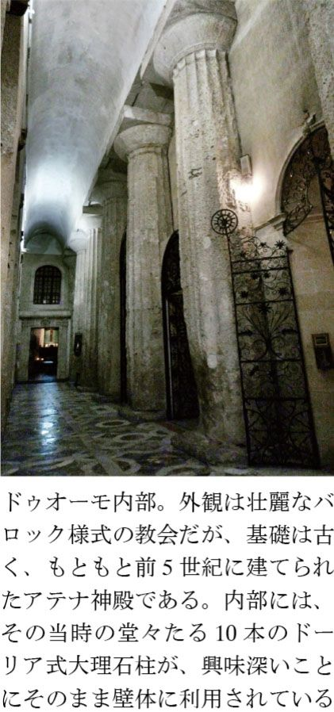
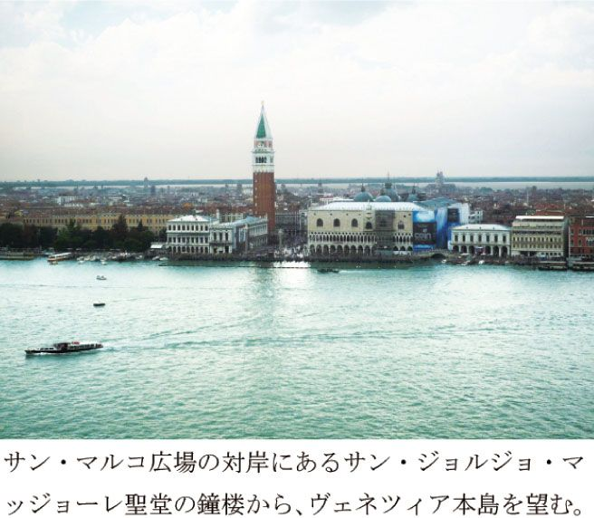
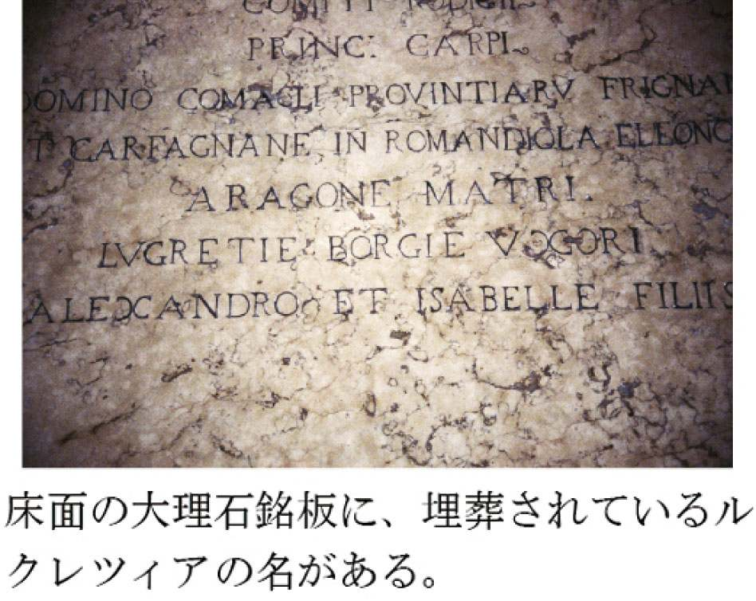
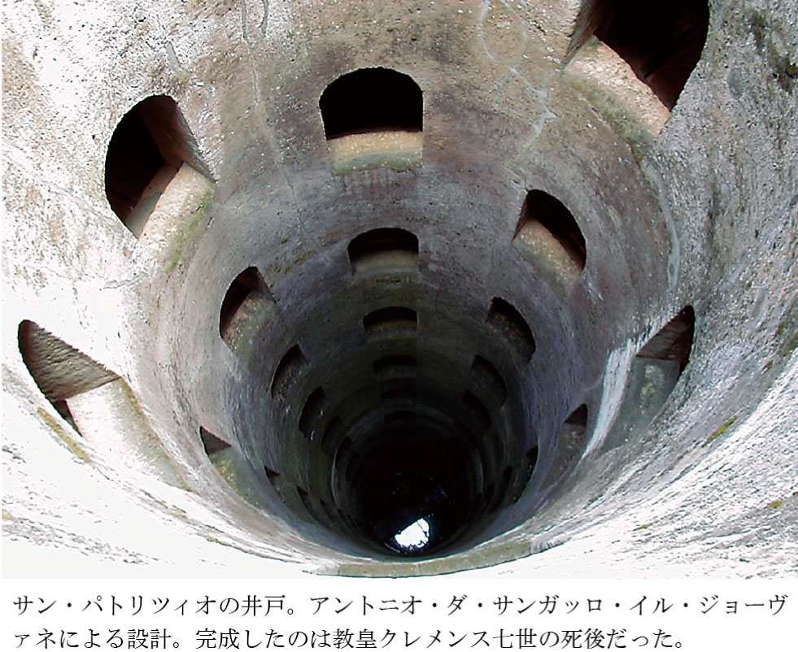
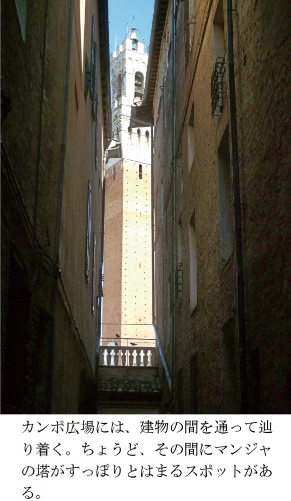
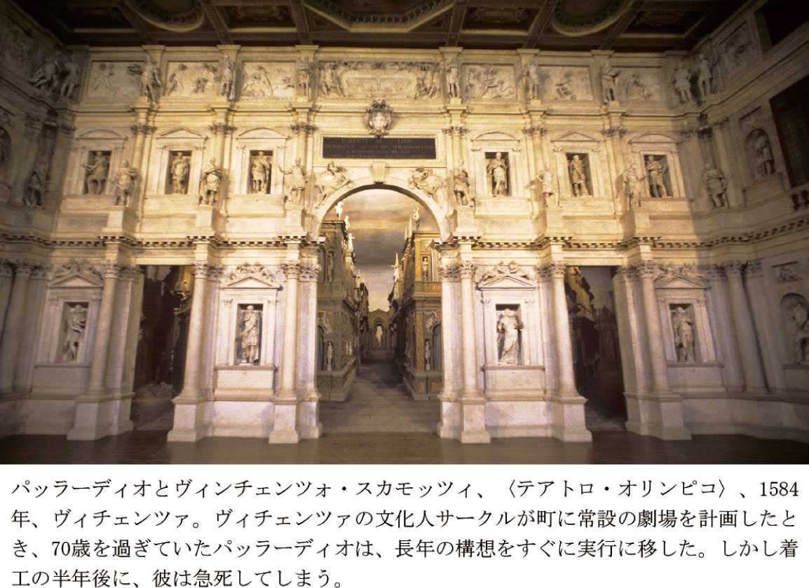
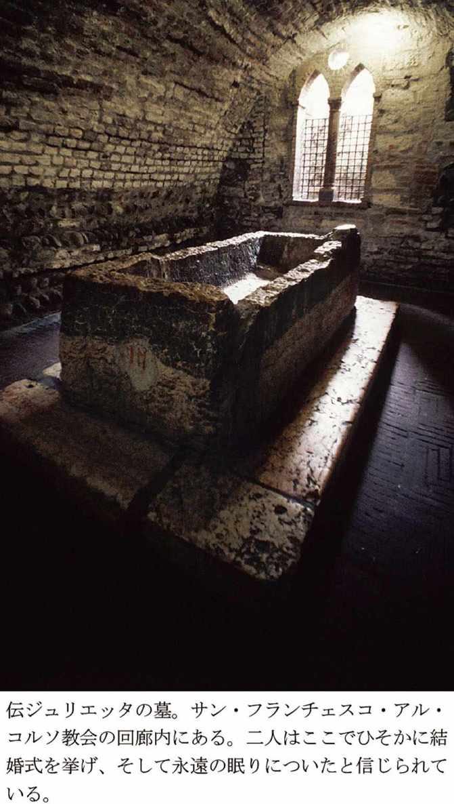
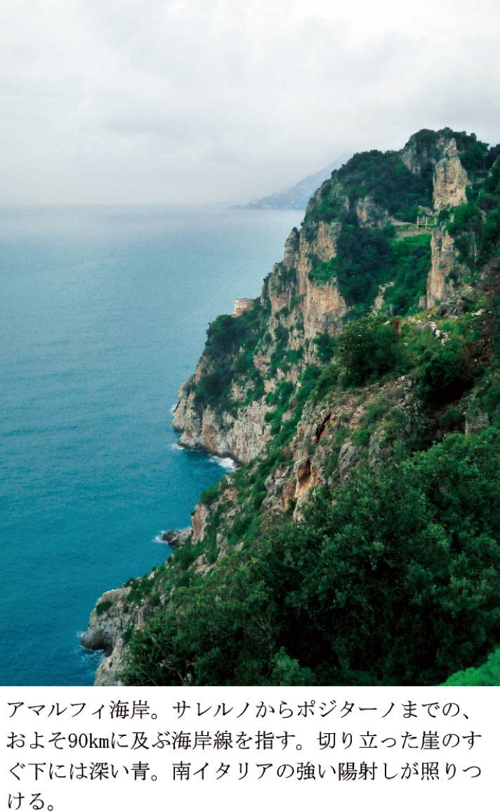
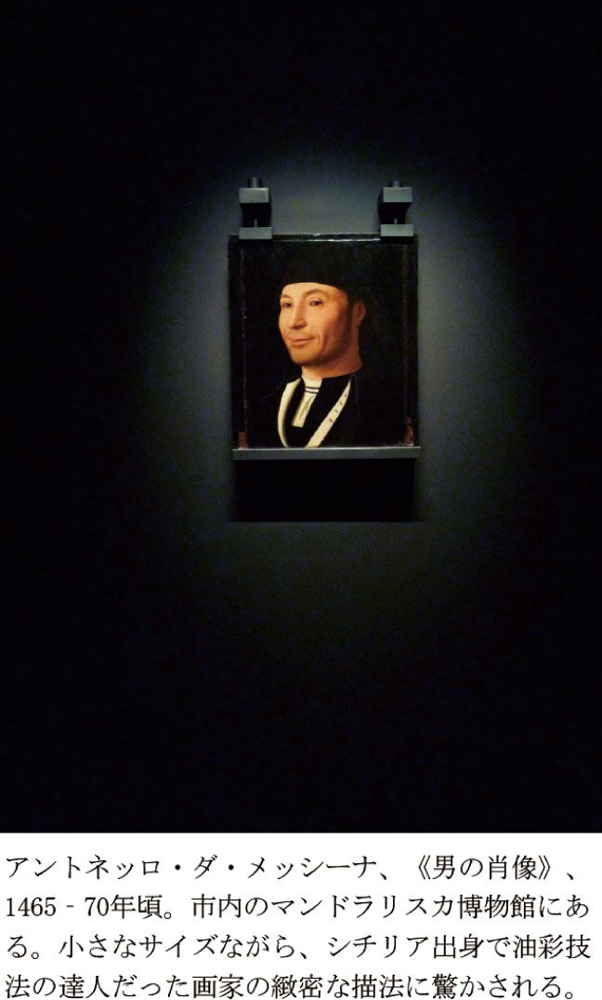
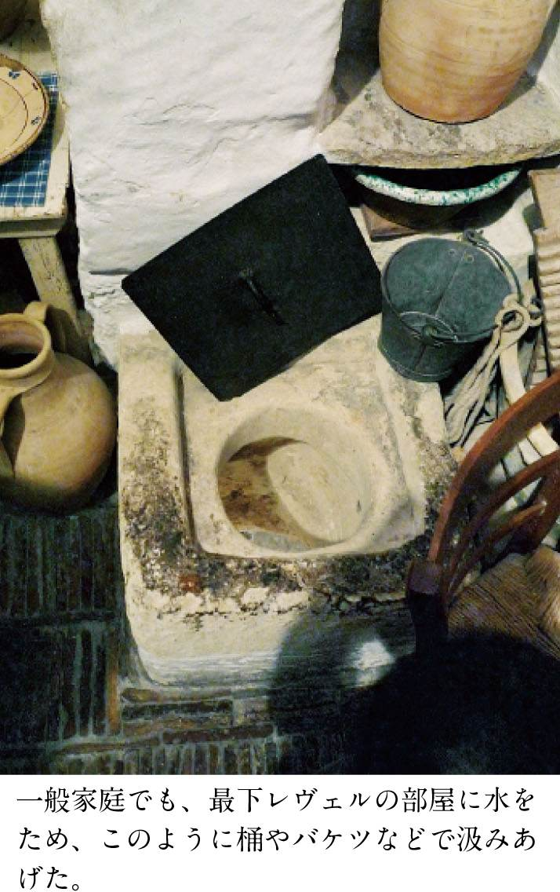

| イタリア ２４の都市の物語 | |
| 池上 英洋 | |
| (2010) | |
イタリアの慣れない街を訪れて、道がわからないので地図を拡げていると、たいていの場合誰かしら寄ってくる。
「どこへ行きたいの」
赤ら顔のおじさんの場合もあれば、ふくよかなおばさんであることも。外国人自体が珍しい田舎の街であれば、子どもたちがクスクス笑いながら数人で声をかけてくることも多い。
どこどこに行きたい、と伝えると、たいていは「見せてごらん」と言われて地図を渡すことになる。ところが、こちらの目的地がマイナーな教会だったりすることも多ければ、イタリア人はあまり地図を読んだことがないのか、自分たちが今いる場所を把握する段階ですでにうーんと唸ってひとしきり地図と格闘したりする。
そのうち彼らは地図上で説明することをあきらめて、しびれをきらしたように、手招きしながらいきなり歩き始める。しょうがないなぁ、一緒に行った方が簡単だからそうしてあげるよ――。彼らの顔にはそう書いてある。
「中国人か」
「いえ、日本から来ました」
「なぜイタリア語を話せるの」
道すがら、おきまりの会話が始まる。
こちらがレンタカーなどに乗っていて、彼らが一緒に行けない場合はとくに面白い。そんな時、彼らはたいてい、前方に見える信号機を指さす。
「あの信号が見えるか」
「はい」
「あそこじゃない」
彼らはこちらを覗きこんで、指を横に振ってノーのサインをすると、また前方を指さす。
「その次の信号が見えるか」
「はい」
ようやく、彼らはうなずきながら、満足そうな顔をして言うのだ。
「よし。あそこを右に曲がれ」
おそらくイタリアを訪れた多くの方が、似たような経験をお持ちだと思う。イタリアを歩く〝楽しみ〟は、美しい景観や威容をほこるモニュメント、芸術作品の数々やおいしい食事などにももちろんあるが、おそらくその〝楽しみ〟の大部分が、こうした日々のちょっとした「イタリアらしさ」に触れることでできているように思う。県民性や国民性を云々するのはどうも非科学的な気がするが、先のエピソードでわかるように、私たちにとっては日常的でないもの、私たちとは異なるものがたしかにそこには存在する。
いまだに日本では、「歌って踊って恋をして」といった、陽気で軽薄なイタリア人イメージが根強い。しかし、当然のことすぎて言うまでもないが、「イタリアらしさ」はもっと多様で複雑かつ重層的にできている。そしてそれらの特質と構造を知っていくことが、すなわちその国の文化への理解を深めることにつながるのだ。
「イタリアらしさ」がいかにして形成されてきたか――。本書は、さまざまな歴史上のエピソードを追いながら、イタリアという国が持つ諸相をともに見ることを目的としている。
この目的のために、本書は四つのテーマからなる構成をもつ。最初の主人公は「男たち」であり、続いて「女たち」をみていこう。歴史は主に男性たちの手で記述されてきたが、当然ながらその実、ほとんど常に男と女のドラマからできているものだ。
続いて、「美」を創りだしてきた人々の物語を見てみよう。これは、イタリアが私たちをまず魅了する要素のかなりの部分が、かの国が誇る芸術によって占められているからだ。
そして最後に、歴史上の特定の人物ではなく、「街」そのものをとりあげるとしよう。歴史物語からは、英雄や偉人たちが為した事柄ばかりが目につくが、歴史とは本来、普通の人々の日々の生活の集積・連続体であるはずだからだ。
＊ ＊ ＊
さて、本書では各エピソードがそれぞれひとつの都市を舞台とする。これは、都市ごとにかなり特色があることも「イタリアらしさ」の重要な点のひとつと考えるからだ。景観ひとつとっても、たとえば都市ごとに広場や塔、橋やモニュメントの写真を見せると、イタリア人ならそれがどの都市のものかほとんど即答できる。特定の地域を悪く言うつもりは毛頭ないが、たとえば日本で、首都圏の各都市の駅前広場などの写真を並べて見せたとして、いったい何人の日本人がそれらを間違わずに特定できるだろうか。
均一化の何が悪いとする考えもあるだろう。しかし、「イタリアらしさ」のところで触れたように、人は異なるものに惹かれる生きものである。どうせそこに暮らすなら、観光業に直結するかどうかは別にしても、他人にも魅力的な場であるにこしたことはない。私は西洋至上主義者では決してないが、少なくともこうした景観や保存の面では、日本が大きく遅れをとっていることは厳然とした事実である。利便性を獲得することと、景観を保存することは基本的には対立する。それら両者の間で良い妥協点を見出すために、私たちが学べることはまだまだ多くありそうだ。
最後に、本書では、それぞれの都市や人物、社会とそのエピソードについて、できるだけ当時の本人たちの口から語らせたいと思う。その方が、私が咀嚼したものばかりになるよりも、当時の雰囲気をよりダイレクトに伝えることができるからだ。
そのため本書では、当時の史料をできるだけ用いて翻訳引用し、入手困難なものや日本でまだ紹介されていないもの、史料的価値が高いと思われるものはイタリア語原文を巻末に掲載した。イタリア語は近世以降、日本語ほどの激しい変化を経なかったため、現代イタリア語を学んだ人であれば、昔の史料がほとんどそのまま読めることにも気づかれるはずである。
イタリア 24の都市の物語 § 目次
パレルモ出身のジュゼッペ・バルサモ、通称カリオストロ公は、ローマから一七九一年四月二一日に移送されてきた。（中略）これからの生涯を、この要塞で最も堅固な牢獄で送ることになる。（監獄所長センプローニによる記録、筆者訳）
宮崎駿の『カリオストロの城』が好きだった。
それまでテレビの三〇分マンガしか観たことのなかった小学六年生の私たちは、そのなめらかな動きと緻密な作画に大感激したものだ。それから、映画の中で描かれていたカリオストロ伯爵が実在の人物であることを知り、彼についての本を探して読み始めた。私が今も続けている錬金術に関する勉強は、その時から始まったようなものだ。
のちに高名な錬金術師としてその名をヨーロッパ中に轟かせるカリオストロ伯爵は、本名をジュゼッペ・バルサモといい、一七四三年六月二日シチリアのパレルモで生まれた。
錬金術師というと、なんだかおとぎ話の登場人物のように聞こえるかもしれないが、近世ヨーロッパではそれを生業にして宮廷を渡り歩く男たちがまだまだいた。ただ、学問の一分野だと純粋に信じて探究していた時代や、やや求道者的な色彩が強くなるルネサンス時代に比べると、カリオストロの時代の錬金術は、むしろ手品や星占いに近い。彼も若いころは、さえない詐欺をはたらいたり、怪しげな薬を高額で売る程度だ。
しかし彼はやがて、いくつもの予言をピタリと的中させるようになり、また生来の社交的な性格のおかげもあって、またたく間に当時の社交界のスターとなった。いつしか自らアレッサンドロ・カリオストロ伯爵と名乗り、その名にふさわしい貫禄まで身につける。
三三歳の時には、フリーメイソンへ正式会員として迎えられている。モーツァルトもいたことで有名なこの秘密結社には、何らかの技能に長けた者だけが入会を許されていた。各国のサロンはあらそって彼を呼んでは、自分たちの前世や運命を占ってもらったり、評判の治療や摩訶不思議な奇術を見守った。
しかし当時、ヨーロッパは革命へと突き進んでいた。そんななか、フランス宮廷をゆるがした、有名な「首飾り事件」が起きる。マリー・アントワネットの名をかたって、ジャンヌという女が一六〇万リーヴルもの大金をせしめた詐欺事件だ。王妃は購入の際に勝手に名前を使われただけの被害者だったが、そのような額が動いている世界があること自体に大衆は不満を持つようになる。宮廷に対する反感、王妃に対する嫌悪感が国民の間に徐々に広がっていく。
この事件に巻き込まれて、カリオストロも一七八五年に妻とともに逮捕されている。すべてカリオストロの入れ知恵だと言い張った首謀者ジャンヌは死罪となる。カリオストロは無罪放免、しかしその後、彼は危険分子として目をつけられるようになる。大陸全体がきな臭くなりつつあるヨーロッパで、このことは命取りとなる。
そして一七八九年の末、ローマで再逮捕。今回の罪状は、異端を信じ、あやしげな秘儀をおこなっているというものだ。すでに一八世紀も終ろうとしているのに、そのようなアナクロな理由による裁判がまだまだ存在していたのだ。こうしてカリオストロは、終身刑を宣告されて、サン・レオにある刑務所へと護送されてきた。
マルケ州にあるサン・レオは、ほとんどの旅行ガイドから外されているような小さな町だ。驚くほど切り立った断崖絶壁の上にある、まさに陸の孤島。大きな岩が突き立っていて、そのてっぺんの平らなところに町がある、といえばご想像がつくだろうか。
その最も高いところに、この小さな町には不似合いなほどに立派な要塞がある。ながく難攻不落を誇った名城だが、教皇庁に併合されてからは、本来の機能を失って刑務所となっていた。絶壁によって隔絶された要塞からの脱獄は不可能で、重罪犯を収監するには理想的だった。
囚人が誰とも話をせぬよう、また何か書きつけたりできるような物など持たないよう、厳しい監視を（後略）。
（収監翌日の日付のある、副所長ガンディーニの手紙、筆者訳）
カリオストロが収監されていた「井戸」と呼ばれる特別房は、その名の通り手の届かぬ天井に穴がひとつあるだけの独房であり、食事もそこから上げ下げするだけだった。これほどの有名人が収容されることは初めてで、しかも妖術をあやつる天才的な悪人という噂だ。刑務所側も細心すぎるほどの注意を払った。
パンは切ったものを渡し、先がふたつに割れた木の皮をフォーク代わりに与えた。（同）
これらはすべて、ナイフだけでなく、フォークでさえも武器になると恐れていたためだ。実際、すすを尿と混ぜてインクを獄中で自作するなど、カリオストロが抜け目のないところを見せたため、監視は厳格さを極めた。そのころ、フランスで発明された気球が話題になっていたこともあり、フランス人のフリーメイソン仲間が空から救出に来るとの噂が飛び交い、見張り兵は夜空もむなしく監視し続けた。
牢屋の便器を空にする必要があるだろう。外部への排出孔がないので、もういっぱいになっている。（一七九四年の所長の手紙から、筆者訳）
衛生状態はこれ以上ないほど劣悪だった。気温も冬には零下二〇度を記録し、格子しか嵌められていない窓からは冷気が囚人を直撃した。慢性的な栄養失調状態も手伝って、囚人は下痢と便秘に交互に襲われ、膀胱炎と尿道炎で苦しみはじめる。汗びっしょりになって高熱がつづき、やがて意識朦朧となって痙攣を繰り返すようになる。当時はまともな治療法もなく、囚人の激痛を緩和するために、薬草の浣腸を処方した医師パッツァリアの文書も残っていて涙を誘う。
一七九五年八月二六日、カリオストロ公ことジュゼッペ・バルサモ死去。サン・レオに閉じ込められた日から、実に四年の歳月が過ぎていた。しかし何かの手違いからか、彼の死亡を報告する日時が一日ずれた公文書が二通ある。そのせいもあって、彼が逃亡に成功したとする説や、仮死状態から生き返ったとする伝説が残された。あまりに苛酷な獄中生活を知れば知るほど、最後は気球に乗って、高笑いを残して夜空に消えていったと、つい想像したくもなるというものだ。
――甦れ！ カリオストロ。
ＳＦ映画『スター・ウォーズ』のシリーズは、ジェダイと呼ばれる騎士たちの物語だった。主人公のルークや父アナキンももちろんこの騎士身分に属しているのだが、彼らは一風変わった格好をしていた。それらが柔道着や丹前といった日本の着物によく似ているのは、ルーカス監督が大の日本映画好きのせいなのだろう。しかしジェダイたちが外出時にその上から羽織るのは、たいてい茶色で丈長のシンプルな服であり、頭巾までついているところは、むしろフランチェスコ会の修道士の衣装を思わせる。
フランチェスコ（フランシスコ）修道会は、ウンブリア州にある小都市アッシジで設立された。会の創設者である聖フランチェスコも、この地で生まれ、この地で亡くなった。聖フランチェスコは当時も今も、カトリック世界で最も高い人気を誇る聖人である。そしてその人気の最大の理由が、彼の愚直なまでの奉仕精神と、従順で篤実な信仰心、そしてひたすらに禁欲的な清貧さにあった。
聖人は本名をジョヴァンニ・ベルナルドーネといったが、父はフランスと織物取引をしていた商人であり、母は父がかの地で見初めたフランス人だったという言い伝えがある。そこから、夫婦は生まれた子供を〝フランチェスコ（フランス人）〟と呼んでかわいがった、という説明がなされている。
当時のイタリアは、ローマ教皇と神聖ローマ皇帝の権力争いの渦中にあり、小さな国家を形成しつつあった各都市も、近隣都市との勢力争いを始めていた。豊かな織物業者の子息として何不自由なく育ったフランチェスコも、成人してからはアッシジ軍の一人として、従者を従えて意気揚々と隣国ペルージャとの戦いの場へと向かった。
しかしアッシジは敗北し、フランチェスコも捕虜となった（当時、勝利した側は、こうした捕虜の身代金でひと儲けしていた）。ようやく解放されたフランチェスコは、今度は南へと遠征する軍に加わったが、しかし途中立ち寄ったスポレートの街で、「どこへ行くのか」と問いかける不思議な声を聴く。
その瞬間から彼の人生は一変した。別人のようになった彼は、自分が持っていたものをすべて貧しい人たちへと与え始めた。あげるものが尽きてしまうと、実家へと向かい、家財道具や商品を持ち出しては売りさばいて配り始めた。さすがに怒った父から「今まで私がやったものを返せ！」と怒鳴られると、彼はすべてを地に投げ捨て、着ていたものまですべて脱いで返す始末だった。彼は粗末な布をまとっただけの姿で、郊外にあった、壊れかけて放棄されていた教会をたった一人で建てなおし始めた。彼のこうした奇行に最初は皆が笑っていたが、その燃えるような熱意と真摯さにうたれる者も徐々に出始めた。
彼は二八歳の時、一一名に増えていた弟子たちとともにローマへ赴き、教皇イノケンティウス三世から修道会としての認可をうけた。こうして誕生した「小さき兄弟団」、のちのフランチェスコ修道会は、従順・純潔・清貧をモットーに、祈りと奉仕にあけくれる集団生活を始めた。彼らは何も所有しないことを美徳とし、食糧がない時には托鉢をしてまわった。
粗末な茶色の布や羊のなめし皮を身にまとい、縄紐をしめるだけのスタイルも、こうした彼らの考えをよく示している。というのも、当時のベルトは、がまぐちと剣をぶら下げるために、丈夫な革と金属でできていた。それを縄に替えるということはすなわち、私有財産を放棄し、武力を行使しないという強い意思表示にほかならない。
聖フランチェスコは清貧を説くだけでなく、当時ほとんど隔離されていたハンセン病患者のための療養院を作り、また十字軍による戦闘を終わらせるために、イスラム教徒であるスルタン（トルコの太守）をキリスト教に改宗できると信じて、遠くシリアやエジプトにまで布教に赴いている。
映画『スター・ウォーズ』の中でジェダイたちが似た格好をしていたのも、彼らは武器こそ使えども、正しく清貧のうちに生きる人々であるという意味合いを持たせるために違いない。そういえば、数年前にオーストラリアやイギリスの人口調査で、一〇万人以上が「信仰する宗派」に記入して話題となった架空の宗教「ジェダイ教」が、その仮教義のほとんどをフランチェスコ会会則に負っていたことも、単なる偶然ではないだろう。
いと高き主よ、すべての称賛と栄光、栄誉と祝福はあなたのものです。（中略）いと高き主よ、あなたは称えられます。病苦に耐え、あなたへの愛のために受け容れている人々のために。（聖フランチェスコ、『Cantico delle Creature［太陽の賛歌］』、一二二六年以前、筆者訳）
こうして聖フランチェスコのもとには、各地から入会を希望する人が続々とやってきた。女子修道会も誕生した。しかし長年の粗食と激務がたたり、彼は四三歳で死の床についた。しかし二六歳の時にたった一人で始めた活動は、亡くなる時には全欧に数万の修道士を抱え、一〇〇〇を超える修道院を擁するほどに急成長していた。すぐに列聖審査が始まった。これには普通は何十年もかかるのだが、フランチェスコは死後わずか二年で聖人となった。
そして彼の死の直後から、弟子のエリヤ修道士を中心に、彼の遺骸をおさめるための教会の建設が始まった。中世ヨーロッパには、完成まで一〇〇年以上かかった教会も珍しくないが、サン・フランチェスコ聖堂は、なんと聖人の死からわずか四年でできあがった。
すぐに半島中から著名な画家たちが集められ、聖人をたたえるためのエピソードなどの諸場面が描かれた。こうしてチマブーエやジョット、シモーネ・マルティーニやローマ派の画家たちが一堂に会した。美術史上、これほど大規模な共同作業はかつてなく、各地からもたらされた様式や技法がこの地で一気に融合し、また各地へと散っていった。
なにもかもが驚異的なスピードで進行した。そうして、この小さな丘の街には不釣り合いなほど巨大な、人類の一大モニュメントができあがった。一九九七年には大地震に襲われ、天井画の一部が崩落したものの、今も壁という壁が大画家たちの名画によって美しく飾られている。その豪華な光景は、清貧の教えからはほど遠く、もし聖フランチェスコ本人が観ていたら苦々しく思うに違いない。
しかしアッシジが、かわることなく世界中から信者を集めつづける巡礼地であり、また大勢の観光客で賑わう世界遺産となっているのは、ひとえに、この地に生まれて死んだ、一人の貧しき聖人のおかげなのである。
一四五二年。四月一五日に、私の孫、息子セル・ピエロの子が生まれた。土曜日の夜中の三時だった。リオナルドと名づけ、ヴィンチ村のピエロ・ディ・バルトロメオ神父が洗礼を授けた（後略）。（レオナルドの祖父アントニオによる記録、筆者訳）
レオナルド・ダ・ヴィンチが生まれた日付や時間までわかるのは、彼の祖父が公証人証書に書き残してくれたおかげだ。五〇〇年後の今でも、一介の人の手によるこうした文書が几帳面に保管されていることにまずは驚く。
レオナルドの父の名にある「セル＝ser」は、彼が公証人をつとめていたことを意味する。この職業はイタリアに今でもあるが（＝ノターイオ）、当時はあらゆる契約書類や裁判記録の作成に欠かせない重要な存在だった。この後には、洗礼に立ち会ったご近所の人たちの名前がずらずらと続くが、村の名士の第一子誕生を祝うにしては、ささやかな印象だ。それはレオナルドが婚外子として生まれたからにほかならない。
（先述した私）アントニオ、八五歳。婦人ルチア、私の妻、六四歳。息子セル・ピエロ、三〇歳。息子フランチェスコ、村にいて何もしていない、二二歳。アルビエーラ、セル・ピエロの妻、二一歳。リオナルド、セル・ピエロの息子。彼と、今はアカッタブリーガ・ディ・ピエロ・デル・ヴァッカ・ダ・ヴィンチの妻であるカテリーナとの間に生まれた婚外子、五歳。（祖父アントニオによる、一四五七年の税控除申告書、筆者訳）
この文書から、レオナルドの母がカテリーナという女性であること、そしてセル・ピエロと結婚することなく、ほかの男性に嫁いでいることがわかる。セル・ピエロが正式な妻として迎えたアルビエーラは、フィレンツェ商人の娘であり、ほどなくフィレンツェに活動の拠点を移すセル・ピエロにとって願ってもない良縁だった。
実際ヴィンチ村は辺鄙な場所にあるごく小さな農村であり、今日でもその不便な交通アクセスのため、辿り着くだけでひと苦労だ。対するフィレンツェは言うまでもなく、当時のヨーロッパを代表する金融の一大中心地だった。野心家セル・ピエロはおそらく、すでにフィレンツェにも事務所を開き、ヴィンチ村には農場経営のために時おり通っていただけと思われる。当時のイタリアでは地域経済の発展にともなって、都市周辺部（コンタード）にある農場を、都市生活者が遠隔経営する形態が広まっていた。
セル・ピエロ夫婦の名がこの文書に登場するのは、あたかも被扶養者のように申告して税の減免をはかる意図に違いない。実際、家族構成員の羅列の右側に、回答としての税の減免額が記入されている。一人あたま二〇〇フィオリーニずつ控除額が認められている中で、ただ一人レオナルドのところだけは空欄のままだ。わずか五歳の坊やにだけ税金がかけられている理由はただひとつ、彼が婚外子だからにほかならない。
チェーザレ・ボルジアをはじめ、大活躍したルネサンス時代の婚外子は少なくない。そのためレオナルドにもなんらハンデなどなかったような誤解があるが、しかし華やかな彼らは、あくまでも社会の最上層の出という例外にすぎない。引用した文書ひとつからでも、一般的な婚外子たちを取り巻く状況が、決して楽なものではなかったことがよくわかる。
実際、レオナルドは婚外子であるがゆえに、公証人組合の規定によって、親の職を継ぐことさえ禁じられていた。そのため、知識階級の子息であれば普通あるはずの、ラテン語や算盤（アバコ）といった基礎学習の機会もほとんど与えられずに育つ。後に広範な分野に思索を拡げるようになって、彼は基礎知識の欠如に苦しめられることになる。幼いうちに矯正されるはずの左利き筆記もそのままだ。
しかし、むしろ人類にとっては幸運なことに、こうしてレオナルドは、なかば強制的に職人の道へと進まざるをえない。けだし万能人レオナルドを育てたのは、婚外子という出自にほかならないのだ。
さて前述した文書でもう一点注目していただきたいことは、夫婦の年齢差だ。レオナルドの両親の年齢差は九、祖父母のそれは二一にもなる。当時はさまざまな要因が重なって、夫婦間の年齢差は社会の上層であればあるほど広かった。そうなると、ただでさえ寿命の長い女性には、夫の死後に長い老後が待っていることになる。そこで女性たちは、老後の生活費を結婚時にあらかじめ持っていった。
つまり持参金とは、よく誤解されているような、妻側から夫側へのプレゼントのような意味合いは微塵もなく、いったん離婚ともなれば妻へ全額返却しなければならない性質のものだった。現代の価値にすると、通常で数百万円、多い場合には数千万円にもなった。
女性を守るためのこのシステムはしかし、持参金を用意できない貧しい層の女性からは、婚機を奪う結果ともなった。おそらくカテリーナはそうした農家の娘だったろう。それがレオナルドを産んですぐ、近くの釜焼き職人に嫁いでいるのは、ほぼ確実に厄介払いとしてセル・ピエロの家が用立てたからに違いない。案の定、セル・ピエロとアカッタブリーガは見知らぬ仲ではない。だからこそアントニオも堂々と、申告書にレオナルドの母の名と、その夫の名まで書くことができたのだろう。
ともあれ、おそらく授乳が終わった直後に、産みの母は家からいなくなった。父と新たな母は、ほとんどフィレンツェにいる。幼いレオナルドを育てたのは、初孫を溺愛する祖父母であり、「何もしていない」と書かれた叔父フランチェスコだったろう。彼は出来の良い兄に似ず、同じく無職である父ののんびり屋気質を譲り受けていた。彼はわが子のようにレオナルドを可愛がったに違いない。その後、正式な甥や姪が一二人に増えても、彼は当時の慣習に反して、婚外子のレオナルドを遺産相続人に加えたほどだ。
こうして穏やかな愛につつまれながら、レオナルドはヴィンチ村で何不自由なく暮らしたはずだ。そして今とほとんど変わらないだろう自然の中で、将来の自然科学者としての博物学的な好奇心をも、自由に育てていったのだろう。
彼は、すべてを手に入れた――。たったひとつを除いては。
プブリウス・アエリウス・トラヤヌス・ハドリアヌス（イタリア語読みではプブリオ・エリオ・トライアーノ・アドリアーノPublio Elio Traiano Adriano）は、スペインに出自を持つ家系のもと、西暦七六年にローマで生をうけた。わずか九歳の時に父が亡くなるが、父のいとこであるトラヤヌス帝のおぼえめでたく、ハドリアヌスは早くから帝国軍の中枢で経験を積んだ。トラヤヌス帝には子どもがいなかったため、彼はハドリアヌスをかわいがり、自分の姪と婚礼をあげさせた。
トラヤヌス帝が斃れたとき、シリア属州の総督だったハドリアヌスは、皇后によって後継者に指名される。優れた軍人だった先帝の時代に、ローマ帝国の領土は最大版図に達し、各方面で異民族とのいさかいが続いていた。新帝となったハドリアヌスはさっそく、交戦中のペルシアと休戦の話し合いに入った。彼は中東地域の諸国と片っ端から休戦協定を結び、属州の政情を安定させてから、ようやく戴冠をうけるためローマへの途についた。先帝の死から、はや一年が経過していた。
ローマではその間、有力な四人の将軍がよくわからぬ嫌疑をかけられて処刑されていた。自らの対立候補となりうる危険分子をあらかじめ排除するようなこのやり方に、都では批判がまきおこっていた。しかしハドリアヌスは、すぐに帝国統治に優れた手腕を発揮しはじめる。彼はそれまでの拡大路線を継承せず、なによりも帝国の防備と安定につとめた。彼は二度にわたって広大な領土の巡察をおこない、各地の守備隊を整備してまわった。この時、国境沿いに延々造らせた城壁の一部が、今もイギリス北部に「ハドリアヌスの長城」として残っている。
彼は属州の地位向上にもつとめ、不公平感を軽減することで反乱の芽を摘み取った。そして官僚制度をつくりあげ、法律を整備する。詩や絵画など諸芸術にも多彩な才を発揮し、ローマの文芸活動の保護につとめる。とりわけ建築に秀でており、ハドリアヌスが改修を指示して現在の形となったパンテオンは、その後数世紀にわたって建築の奇跡とみなされ、ルネサンス建築の重要な指針となった。彼の時代に、地中海世界はまさに〝ローマによる平和（パックス・ロマーナ）〟を実現した。彼は、すべてを手に入れたように見えた。
しかし彼には後継者がいなかった。配偶者がいるにはいたが、まるでギリシャ文化への傾倒を示すように同性愛者であった彼には、ついぞ子どもができなかった。彼の愛は、ギリシャ生まれの青年アンティノウス（イタリア語読みでアンティノー）ただ一人に注がれた。
まだ一〇代のこの若者について、詳しいことは何も残っていないが、その比類なき美しい姿は常に皇帝の傍らにあった。皇帝は誰からも邪魔されることなく、彼と愛を語りあうためだけに、ローマの喧騒からやや離れた高級避暑地、ティヴォリに別荘を建設し始めた。彼はこの〝ヴィッラ・アドリアーナ（ハドリアヌス帝の別荘）〟を理想の楽園とするべく、巡察に際し領土の各地で目にしてきた、さまざまな美しい風景を再現させた。
ところが一三〇年、ナイル川でアンティノウスが溺死してしまう。愛する者の死によってのみ皇帝の願いが成就するという神託を受けたため自殺したという者や、皇帝の寵愛を一身にうける若者を危険視した輩の仕業だと考える者もいた。しかしひょっとすると、独占欲が高じたあまり、永遠に誰にもさわられないよう、皇帝が自らの手で愛する人の命を奪ったのかもしれない。皇帝は来る日も来る日も泣き続け、ローマに帰ってきたときにはすっかり無口な人になっていた。彼はアンティノウスの神格化を宣言し、彼の名にちなんだ新しい都市まで建設した（アンティノポリス）。
一一八年から始められたヴィッラ・アドリアーナの建設は、一三四年頃まで続けられた。一二〇ヘクタールあまりの広さは、歴代皇帝が作ったヴィッラのなかでも最大の規模を誇っている。完成からわずか四年で皇帝が亡くなった後は、すっかり忘れ去られて放置され、略奪されるにまかされた。ハドリアヌス帝自らローマに造った霊廟は、その後幾度も役目を変え、今日ではサンタンジェロ城の名で知られている。
一方、ティヴォリに放置されたヴィッラは、一五世紀にはいって再発見され、発掘が始まった。晩年、失意の皇帝は時にここをおとずれ、愛する人との想い出にひたりながら歩いたに違いない。彼が発注した、数百体ものアンティノウスの彫像に囲まれながら。
わがさまよえる魂よ、かわいらしく魅力的な魂よ、
この体に間借りしたわが同胞よ、
今、おまえは立ち去るのだ。蒼ざめた、冷たいむき出しのあの場所へ
昔のような気晴らしなど、二度と無いようなあの場所へ
（ハドリアヌス帝の辞世の句として伝えられる詩。原文はラテン語。筆者訳はマカーレによるイタリア語版から）
ティヴォリには、贅沢にも世界遺産がもうひとつある。市の中心部にあって威容をほこる〝ヴィッラ・デステ（エステ家の別荘）〟がそれである。
一五五〇年、ティヴォリ総督にイッポリート・デステ枢機卿が就任。彼はフェッラーラのエステ家に嫁いだルクレツィア・ボルジアの子。つまりチェーザレ・ボルジアの甥にあたる。イッポリートは洗練された宮廷文化をティヴォリに持ち込み、ただちに庭園建築にとりかかった。ヴィッラは自然の急斜面を生かして設計され、その落差を利用するべく噴水がふんだんに採り入れられた。
失脚して中央政界での力を失ってからは、ここの建設が彼のただひとつの情熱となった。建設は、イッポリートの死（一五七二年）をもってようやく止んだ。こうしてヴィッラ・デステは、イタリア式庭園の最高傑作として、永遠にその名を残すことになったのである。
誰でも、子供のころに学校で〝アルキメデス〟の名を聞かされたことがあるだろう。
むかしある王様が、金細工師に純金の王冠を作らせた。しかし金細工師が金を一部着服し、代わりになにか別の金属を混ぜたのではないかと疑った王は、アルキメデスにそれを調べるよう命じた。しかし王冠は、最初に材料として渡された金塊ともちろん同じ重さに造られている。どうやって見極めれば良いか悩んでいたアルキメデスは、ある日お風呂につかったとき、浴槽から溢れ出るお湯を見てひらめいた。金より重い金属はないのだから、同じ重さの純金と合金では体積が異なるはずだ。彼は喜びのあまり裸のまま浴場をとび出し、「エウレカ！（わかった！）」と叫びながら町を駆け抜けたという。
この〝アルキメデスの原理〟にその名を残すアルキメデスは、実在の人物である。彼は紀元前二八七年、シラクーザに生まれた。シラクーザはシチリア島の東南部に突き出た海岸線に位置する人口一二万五〇〇〇ほどの中都市で、今も島では港町としてそこそこの重要性を保っている。しかし驚くなかれ、シラクーザはかつて、地中海最大の都市として繁栄した輝かしい歴史を有しているのだ。
その頃、シラクーザは〝シュラクサイ〟とギリシャ名で呼ばれていた。古代地中海に覇をとなえたギリシャは、アテネをはじめとする諸都市による、ゆるやかな連合体を形成していた。都市群は、入り組んだ海岸線からなる島嶼部に点在しており、耕作に適した平地の広さも限られ、ひとつひとつの都市の人口はおのずと限定されていた。そのため、ギリシャでは都市人口がある程度増えるたびに、あらたな植民地へ移住するための遠征隊が組織された。

早くも紀元前八世紀頃から始められたこの移住政策により、中心都市アテネでさえ人口はほぼ常に四万以下に抑えられていた。他の都市はおしなべて数千人規模、多くても二万程だった。その一方で、地中海にはギリシャ人による植民都市が増え続けていった。この全域を、〝大ギリシャ〟と総称する（後にローマ人は、イタリア南部とシチリア島に作られた植民都市群だけをもって〝マグナ・グラエキア〈大ギリシャ〉〟と呼んでいる）。
シラクーザはアグリジェントと並んで、シチリア島の代表的なギリシャ系植民都市となった。アテネとスパルタが盟主の座を争った前五世紀のペロポネソス戦争では、スパルタ側についてアテネ勢力を島から駆逐。続く前四世紀には、シチリア島の全域をほぼ従えるに至った。このとき、シラクーザの人口は五万を突破。その後、アレクサンドロス三世（アレキサンダー大王）によって建設されたアレキサンドリアなどのヘレニズム諸都市の登場によって抜かれる（エジプトのアレキサンドリアはなんと五〇万人を突破する）まで、シラクーザは大ギリシャ時代の地中海における最大の都市であり続けた。
しかし、北アフリカで勢力を増したカルタゴが海を渡ってシチリア島へ侵入。島は、ローマとカルタゴの間でその後断続的に続けられる戦いにおいて、常に主戦場となった。シラクーザにはその間、軍人あがりで実質的な君主となったディオニュシオスなど、多くの英雄が現れた。彼はシチリア島のギリシャ系諸都市からなる連合軍を率いて、カルタゴに必死の抵抗を試みた名君だが、日本では太宰治の『走れメロス』に出てくる暴君として知られている。
たしかに、天然の地形を生かした岩場の監獄に捕虜を閉じ込め、その岩場の上で彼らの嘆息を聞くのを趣味としたという伝説もある。この〝ディオニュシオスの耳〟と呼ばれる岩場は、一七世紀の流浪のバロック画家カラヴァッジョによって名づけられたとされ、上へいくほど狭くなるその構造は、なるほどひそひそ話さえ大きく響く音響効果を有している。
アルキメデスは、シラクーザの繁栄の歴史の最後を飾る英雄である。彼は浮力の原理を見出したにとどまらず、螺旋状のねじ構造を回転させて水を汲み上げる〝アルキメデスのねじ〟を発明するなど、偉大な知性としてその名を広く知られていた。その頭脳は、対カルタゴでのシラクーザ防衛にも発揮されていた。
しかし、カルタゴの英雄ハンニバルの勢いをみたシラクーザの若き王は、それまでのローマとの盟約を破ってカルタゴに与する愚挙に出た。怒れるローマはすぐさま大艦隊を派遣してシラクーザを包囲。老アルキメデスは巨大な凹面鏡を用いてローマの軍艦を焼き払うなどして抵抗したが、街はついに陥落。
ローマの将軍はこの老賢者を殺さないよう通達を出したが、それを知らぬ一兵卒にアルキメデスは殺害された。それも、地面に図形を描いて幾何学に没頭していたところ、捕まえに来た兵士がその図を踏み、それに対して「踏むな！」と怒鳴ったからという、どこまでも科学者らしい理由によるものだった。
シラクーザはそれ以後、歴史の表舞台から姿を消す。しかし街には大劇場などの、大ギリシャ時代の栄華をしのばせる建造物が多く残る。ギリシャ時代の地下水道を拡張して掘られたカタコンベもみどころのひとつである。ここでは、カタコンベに残された初期キリスト教時代の貴重な碑文を紹介しておこう。
エウスキアは、誠実で気高い、二五年間ほどの罪なき人生をおくり、聖ルチアの日に亡くなった（中略）。信心深く、非のうちどころのないキリスト教信者であり、その優美さと人柄によって夫に愛された。（サン・ジョヴァンニのカタコンベで一八九四年に発見された碑文。原文はギリシャ語。筆者訳はズガルラータによるイタリア語訳から）
リュック・ベッソン監督が世界的にその名を知られるきっかけとなった映画『グラン・ブルー（グレート・ブルー）』（一九八八年）は、実在する二人のフリーダイバーを描いた物語だ。主人公として描かれたのがフランス人のジャック・マイヨールで、一方、彼の友人かつ好敵手として描かれていたのが、エンツォ・マイヨールカというイタリア人ダイバーである。
二人は実際に、お互いに切磋琢磨して記録の更新合戦を繰り広げた。一九七六年にマイヨールが初めて一〇〇メートルの深さまで潜ると、エンツォが一〇一メートルの記録で逆転した。
映画の中で、ダイビングの大会が開かれている場所がタオルミーナであり、垂れ幕や駅名などで何度もその名前が画面に映る。日本では再公開時（一九九二年）に映画が記録的なヒットとなったせいもあって、この街の名は映画ファンの間で特によく知られている。実際にここを訪れる人も少なくなく、映画で描かれているとおりの深い青色の海を目にして、また感動をあらたにするのだろう。
ジャン・レノ演じるエンツォは、崖に貼り付いたようなレストランでマイヨールと食事をしている。そこへ母親がブスッとした顔でやってくる。エンツォは満面の笑みで「マンマ！」と両手をひろげるが、家で食べないことをとがめられることがわかっているので、「コーヒー飲んでるだけだよ」と言い訳をする。
しかし、間髪入れずにウェイターがボンゴレ・スパゲティを運んできてしまう。固まるエンツォ......。いい大人になった息子に対して家で食べろというのが、いかにもイタリアのマンミズモ（mammismo＝母親至上主義）的でおかしい。ちなみに撮影場所は、イゾラ・ベッラ（美しき島）を見下ろす「カポタオルミーナ」というホテルのレストランである。
もし、シチリアで過ごす日が一日しかなく、何を見たらいいかと尋ねてくる人がいたとしたら、私は迷うことなく「タオルミーナ」と答えるだろう。それは片田舎の景色にすぎないのだが、そこには目と、魂と、想像力を魅了するためにこの地に創られたすべてのものがある。（中略）。かつて、（タオルミーナとその劇場を造った）人々は、私たちとは異なる目と魂を持っていたのだ。彼らの血管には、今日ではすっかり失われてしまったように思われる何かが、血と一緒に流れていたのだ。それは、美に対する愛情と畏敬の念なのだ。（モーパッサンによる一八八五年の記述、筆者訳）
タオルミーナはしかし、なにも映画のおかげで急に観光名所になったわけではなく、古くから「知る人ぞ知る」場所だった。ここに掲げたモーパッサンをはじめ、ゲーテやデュマといった多くの文豪たちが、この地の景観を称えている。
最初にこの街をつくり始めたのはギリシャ人である。たとえば、街の東部に位置するサンタ・カテリーナ・ダレッサンドリア教会の内部には、ギリシャ時代の遺構がむき出しのまま展示されており、当時の名残を今に伝えている。その後、ローマ人（ラテン人）たちが街を受け継いでさらに発展させた。
街のシンボルとなっている〝ギリシャ劇場〟も、現在私たちが目にしている姿は、実際にはローマ人たちがほとんど全面的に手を加えたあとの状態である。ローマ時代には、ギリシャ悲喜劇のかわりに、コロッセオよろしく血で血をあらう剣闘士同士の殺戮ショーが好まれた。そのため、演出用の〝せり出し〟を付けるべく、オルケストラ（平土間）中央に地下溝が掘られている。
このギリシャ劇場は、観客席の最大直径で一〇〇メートルを越えるほどの大きさがあり、シラクーザにあるものに次いでシチリア第二の規模を誇っている。そして保存状態の良さでは、おそらく他の追随を許さない。やはりローマ時代に加えられた舞台正面壁（スカエナエ・フロンス）もかなり状態良く残っており、往時の威容を想像させる。
半円形の観客席に腰をおろすと、舞台のはるか向こうの左手には青い海がひろがり、右手にはエトナ山の端正な姿が目に入る。富士山と大きさも形もよく似たエトナ山は、古くから噴火記録が残されている活火山であり、ほとんど常に噴煙をあげている。ここ数十年の間だけでも何度か噴火を繰り返しており、かつて劇場に座っていた観客たちも、遠くエトナ山の山肌を真っ赤な溶岩が流れ落ちていく様を見ていたに違いない。そして、その上に広がる真っ青な空を、白い雲がかなりの速さで泳いでいたことだろう。つまり太古の昔からここの観客たちは、舞台で繰り広げられる演劇を、圧倒的な力を誇示する大自然の借景のもとで眺めていたに違いない。
さてシチリア島の最大の特徴は、何度も主人を代えたことによる文化の重層性にある。タオルミーナもその例にもれず、次から次へと支配者を代えていった。中世には、この街は東ローマ帝国（ビザンチン）によるシチリア支配の拠点のひとつとなった。一〇世紀にはアラブ人が支配しており、岩の頂から街を見下ろす城も〝サラセン人の城〟と呼ばれている。その後ここを統治したノルマン（ヴァイキングの末裔）王朝の時代には、街の現在の西半分ができあがった。彼らもまたこの地の絶景に驚いて、王宮へと詳細な報告を書き送った。
『グラン・ブルー』で、イタリア国旗を模した赤白緑の三色スイムスーツを着たエンツォは、無理な記録に挑戦して死んでしまう。そして彼を追うかのように、マイヨールもまた、深海でイルカについて行きこの世から去ってしまう。その後、この予言に従うかのように、実在のマイヨール本人もイタリアで自殺を遂げた。一方のモデルとなったエンツォは、劇中で死ぬ映画と異なって、一人その後も生き続けた。しかし彼は、一〇五メートルというマイヨールの記録をついに破ることができなかった。
深い青に囲まれた、タオルミーナの街。緑の木々の間を、急な坂道が入り組んで走る街。太古の昔から、溶岩の真紅と、大海の紺碧と、大空の群青を客席から見続けてきた街。そしてさまざまな文化が、何層にも重なってできた街――。私もモーパッサンにならって書いておくことにしよう。シチリア島で一日あるなら、「タオルミーナ」と。
なんと甘美で、ここちよいものなのでしょう。
私を愛し、求めてくれる人と
ベッドをともにすることは――。
（ヴェロニカ・フランコ、『Rime［詩集］』〈一五七五年〉、第二歌より、筆者訳）
この、なんとも直接的で正直な詩を書いたのは、ルネサンスのヴェネツィアを生きたヴェロニカ・フランコ（フランカ）という女性である。一五四六年に生まれた彼女の名を、私たちはまず『ヴェネツィアの花形娼婦総覧』の中に見出すことができる。まだ駆け出しの彼女の価格は二スクーディ。そう、女流詩人として知られるヴェロニカの職業は娼婦だったのである。
当時ヴェネツィアは地中海一の貿易港として繁栄し、富を求めて世界中を行き交う男たちが集う場であった。ヴェネツィア経済は周囲を圧倒し、その通貨は今日のドルのような機能を果たしていた。
さらにヴェネツィアは、ローマから地理的に離れているだけでなく、強国として政治的にも独立していたため、カトリック教会が求める倫理規定もやや弱められる結果となっていた。いきおい、そこは娼婦の都となった。諸説あるが、当時ヴェネツィアに住んでいた女性のおよそ一〇人に一人がなんらかの形で携わっていたと考えられるほど、売春業はこの港町の一大産業となっていた。
彼女たちは、本来は宮廷女性を意味する用語である「コルティジャーナ（Cortigiana）」と呼ばれていた（Corte＝宮廷）。教皇庁や宮廷に少なからぬ娼婦たちが出入りしていた状況を皮肉って生み出された呼び名だが、事実、一般家庭の女性たちが家に縛りつけられていた一方で、彼女たちは性だけでなく芸事や豊富な話題を提供して、上流階級の男たちの社交界を彩るようになっていた。こうした、高い教養によって身を立てるようになった高級娼婦たちのことを、ヴェネツィアでは特に「高尚な娼婦（Cortigiana onesta）」と呼んで、一般的な売春婦である「ロウソクの娼婦（Cortigiana di lume）」と区別した。
後者はヴェネツィアのへそにあたるリアルト橋の周辺に集まっていた。乳房を露出し、髪を高く盛り、高さ数十センチにもなる木靴を履いた娼婦たちの姿は、この街を訪れる旅人たちを驚かせた。運河にかかる橋の急勾配で、何度もこける娼婦の滑稽な姿を紹介した文書もある。また、この生業には金髪が必須条件とされていたため、ヴェネツィア特有のテラスに座り、中央に穴のあいたつば広の帽子をかぶって、灰やワインの澱からなる溶剤を塗っては日光に頭髪を長時間さらして脱色する女性たちの姿が見うけられた。脱色後はサフランなどで黄色く染めるのである。

ヴェロニカは若くして医者と結婚したが、ほどなく別れ、「高尚な娼婦」への階段をのぼり始める。当時のヴェネツィアは全欧州から文人や芸術家が訪れるような街であり、本の出版点数ひとつとっても他の都市を圧倒していた。そのような街の空気のなかで、ヴェロニカは交流をもった文人たちから多くを学び、自らサロンを主宰するようになっていく。楽器を巧みに奏で、ウィットに富んだ会話で人々を楽しませ、その時の話題にあわせた詩を即興で詠った。彼女は特に、恋愛をテーマとする三行詩を得意とした。
一五七五年、二九歳のヴェロニカは、贈られた詩と返答詩をおさめた一八章からなる『Rime（詩集）』を出版。その五年後にはソネットや手紙のたぐいを集めた『Lettere familiari a diversi（書簡集）』を刊行した。前者はマントヴァ公、後者はフランス王アンリ三世に捧げられており、ヴェロニカの交際の広さをうかがわせる。
しかし、華やかな暮らしぶりの反面、世間はまだまだ売春業に対して厳しいものでありつづけた。ヴェロニカ自身、何度か裁判所へ訴えられている。有力な知り合いが多かったので罰こそ受けなかったが、なかには、彼女が教会から聖水を盗み、魔法の薬を作ったというような訴えまであった。娼婦に対するこの手の訴えは数多く、弱い立場の娼婦たちは見せしめのためにもしばしば収監された。
ヴェロニカは、自分たちが置かれたこうした状況を改めようとする。『書簡集』には、娘をヴェロニカと同じ道に進ませようと相談してきた母親に宛てた手紙がある。そこでは、娘を娼婦にするのはやめなさいと、その道の成功者であるヴェロニカ本人が述べている。実際、ヴェロニカ自身六人の子をもうけ、三人を病で失ったが、残る三人はそれぞれの父親たちに後見させて、しかるべき階級の家庭に入れている。
私があなたに、娘さんの処女を護るようこれまで何度もお願いし、また警告してきたことを知っているでしょう。世間はとても危険でうつろいやすく、か弱い母親たちの家など、飢えた若者たちの愛欲の罠の前では、少しも安全な場所ではないのです――。（書簡第二二番、筆者訳）
ヴェロニカは、こうした自らの考えを行動に移そうとした。ヴェネツィアの政府当局に請願を出し、子連れの娼婦たちを収容するための福祉施設の設立を訴えたのである。娼婦自身がその生業を続けなくてよいように、そして、その子どもたちがその職業を継がないように――。この願いは聞き入れられなかったが、しかし一五八〇年、ヴェネツィアに娼婦のための救護院が誕生した。それはまさに、ヴェロニカが望んだとおりのものだった。
ヴェロニカ・フランコ、一五九一年に熱病あるいはペストにより死去。自らの魅力だけで道を切り拓き続けた、四五年の生涯だった。
観光地として日本人にはすっかりおなじみとなったイタリアだが、数多くの町の中には、ヨーロッパでの人気度の高さのわりには、まだまだ日本人の訪れる数が少ない町がいくつかある。トスカーナ州の宝石、ルッカもそのひとつだ。
ルッカは、もともとこの地方に住んでいたリグーリア人の町だったが、肥大化するローマの勢力に取り込まれて、紀元前三世紀頃から一大軍事拠点として発展した。小さな町の中心部を取り囲むように、今も細い路地がきれいな長方形を描いているが、これはローマ時代に作られた四角い最初の城壁の名残だ。そのやや北東側にあった円形闘技場（アンフィテアートロ）は、観客席があったところにいつしか家が建てられ、楕円形の広場を建物がぐるりと曲面を描きながら取り囲む、一風変わった構造になった。
この街の光景を独特のものにしているもうひとつの要素は、街を取り囲んでいる城壁跡だ。この城壁は、もともと街の三番目の城壁として一六世紀に作られたものだ。街にとって幸運なことに、堅固なこの新城壁はほとんど使われる機会がなかった。戴く領主をときおり代えたほかは、町はながく平和のうちにあった。そうして町を治めた君主たちの一人に、ナポレオンの妹エリザ・ボナパルトがいる。
今日、平均で一二メートルの高さを持つ城壁の上には、美しい並木道が続く。稜堡のほとんどはかわいらしい公園となっており、日曜日の昼ともなれば、ラジオからサッカー中継を流しながら、トランプを楽しむおじいさんたちのわきを、風に吹かれながらレンタサイクルを漕ぐ観光客が、気持ちよさそうに通り過ぎる。
そこは緑の環で囲まれた街、グイニージの貴婦人が眠る街。今もその白百合は、装束を身にまとい、自らの美しい棺の上で眠り続ける（攻略）。（ガブリエーレ・ダヌンツィオ、『賛歌』第二巻『エレットラ』中の詩「ルッカ」より抜粋、筆者訳）
ダヌンツィオが詩で詠っている〝グイニージの貴婦人〟イラリア・デル・カレットの墓は、町のドゥオーモ（司教座教会のこと）であるサン・マルティーノ教会にある。石棺の蓋の部分に肖像彫刻が施されたイラリアの墓は、一四〇八年に制作された、ルネサンス彫刻の大家ヤコポ・デラ・クエルチャの代表作のひとつである。その三年前に亡くなった妻イラリアを、美しい大理石像として甦らせたのは、夫のパオロ・グイニージだ。
まるで船頭も漕ぎ手もないまま嵐の中を漂う船。（当時のルッカの状況を述べた、司法官ジョヴァンニ・テスタの言、筆者訳）
パオロの父が亡くなってしばらくは、グイニージ家の内部で血を血で洗う実権争いが続き、ルッカは混乱のうちにあった。当時のルッカを実質的に支配していたのはペストであり、多い日には一五〇人もの死者を出していた。人文学者でもあるルッカの年代記者セルカンビが伝えるところによれば、パオロは兄弟間の抗争を力ずくで終わらせ、指導者の地位についた。
しかしパオロが最初に迎えるはずだった妻カテリーナは、式の数か月前に一二歳の若さでペストに斃れた。途方にくれたパオロに頼み込まれたミラノ公は、候補として三人の女性を挙げた。しかしうち二人は九歳と一〇歳の幼い少女であり、すぐにあと継ぎをえることを望んでいたパオロは、当時としては嫁ぎ遅れにあたる二二歳のイラリアをしぶしぶ選ばざるをえなかった。こうして、フィナーレの領主デル・カレット侯の娘イラリアは、二年後の一四〇三年二月三日、ルッカで三〇歳のパオロと結婚式を挙げた。
当時は「絹製品を着てはならぬ。二〇〇フィオリーニ相当以上の金品を身につけてもならぬ」といった倹約令があり、結婚式の席にも一度に一二人以上の客を呼ぶことが禁じられていた。それならばと、パオロは結婚式を三日三晩続けて客を入れ替わり立ち代わり列席させ、ついでに聖職者たちには休みを与えた。
式の後、新婚夫婦は領内を見てまわる旅に出ている。この手の旅が一〇か月も続いたことは当時としても珍しく、おそらくペストが蔓延する都市部を避ける疎開の意味もあったのだろう。長旅からルッカに戻ってちょうど九か月後の一四〇四年九月二四日、はかったように長男ラディスラオが生まれる。ルッカは再び大宴会で賑わい、かがり火が夜ごと町中を照らし続けた。
長男誕生からわずか五か月後に、イラリアは再び妊娠する。当時の上流階級では普通のことだが、子供を一人でも多く産むことを使命とする妻は、生まれたばかりの我が子を乳母たちに預け、自らは授乳することなく、月経を早めて次なる受胎に向けて準備するのだ。しかし、当時の劣悪な衛生状態と、男性のみの医学界で産婦人科がタブー視されていたこともあって、出産は安全からはほど遠かった。このためヨーロッパでは長い間、ペストに次いで、女性の死因の第二位を産褥死が占めていた。
こうして、長男を産んでから一四か月後に、今度は娘が生まれた。しかし、それからわずか一〇日ほどしか経たない一四〇五年一二月八日、イラリアはこの世を去る。享年わずか二六歳。幸せな結婚式を挙げてから、三年足らずの短い夫婦生活だった。
その後をついで、パオロの三番目の妻となったピアチェンティーナは、九年のあいだに五人の子を産んだ。そして六人目のときに、身重なまま亡くなった。四番目で最後の妻となったヤコパは、長女を産む。しかし二女は産後まもなく死亡し、あとを追うように自らも数時間後に亡くなった。当時の妻たちはみな、若くして嫁ぎ、すぐに出産を期待されて、多くがそのために若くして命を落としていった。
短い期間だったにもかかわらず、二番目の妻イラリアとの生活は、パオロにとって実質最初の新婚生活でもあり、よほどに素敵な思い出だったのだろう。残っている資料が少ないために、その人となりはほとんどわかっていないが、妻たちの中でイラリアだけがただ一人永遠の生命を与えられて、今日も穏やかな笑みをたたえて、ひとり静かに眠り続ける。
一日に手紙を三通書くことは、誰にだってできるだろう。しかし、それを四〇年間、一日も欠かさず続けるとしたらどうだろう......。イザベッラ・デステという女性がその生涯でしたことは、つまるところそういうことだ。
彼女は六五歳で亡くなるまでに、わかっているだけで四万通におよぶ手紙を書き残した。ルネサンスの戦国時代を生きる女性として、彼女が手にした最大の武器は手紙を書くことだけだった。しかしイザベッラはその唯一の武器をたよりに、小都市マントヴァを率いて乱世を生き抜くことに成功した。自らはルネサンスの代表的なパトロンの一人となって、マントヴァ宮廷をして、北イタリアにおけるルネサンス文化の一大中心地にまで育てあげた。
イザベッラが生まれたフェッラーラは、小都市ながらも豊かなところで、大国ヴェネツィアと近隣諸国に挟まれているせいで、政治的にも重要性を保っていた。一三世紀からこの地を支配しているエステ家は、小規模ながらも洗練された宮廷文化で知られていた。イザベッラの父エルコレ一世も典型的なパトロン君主であり、子どもたちがみな早くから複数の言語を解し、非凡な人文主義的教養を身につけることができたのは、ひとえにこうした環境で育てられたおかげである。
イザベッラは一四九〇年、一六歳でマントヴァのゴンザーガ家に嫁ぐ。同家はその半世紀ほど前からマントヴァ辺境伯の地位にあり、フェッラーラに劣らぬ豊かな宮廷文化を主導していた。しかし八歳上の夫ジャンフランチェスコ二世は、生まれながらの軍人だった。フランスから大軍を率いてシャルル八世が侵入してきたとき、それまでお互いに牽制しあっていた半島内の都市国家群はひとたまりもなく蹴散らされた。しかしフランス王がナポリまで行ってひき返してきたとき、北イタリアではようやく同盟軍が結成され、帰国途上にあったフランス軍に襲い掛かった。
この「フォルノーヴォの戦い」は双方が勝利を主張するあいまいな結果に終わったが、ともあれ強敵に一矢を報いた対仏同盟軍にあって、総司令官を務めていたのがジャンフランチェスコ二世だった。戦いに明け暮れ、家庭をかえりみることもなく、文化に何の興味も示さない夫に対する反抗のように、イザベッラは芸術への傾倒を深めていく。
ひとつ眼のキュクロプスの王ポリフェモスが、ガラテアのすぐ後ろを走ります。そしてフィボスは、月桂樹に変わりつつあるダフネの後ろになります。（書斎のための絵画についての指示の手紙、一五〇三年一月一九日、筆者訳）
パトロンとしての彼女は、これでもかというほどに口うるさい。イザベッラが彼女の書斎（ストゥディオーロ）のために画家ペルジーノに描かせた〈愛と貞潔の戦い〉に関して、どこに何をどう描けと指示する、実にこと細かく長々とした手紙が残っている。しかも最後は「多すぎる場合には端役の人物を減らしてもよいが、何も加えてはいけない」という文で締められる。
彼女はこの調子で各地の芸術家にさまざまな注文を出し、粘り強い交渉を繰り返して、優れた画家たちに指示どおり描かせた作品を、貪欲にコレクションに加えていった。
あなたの手によって描かれた、一二歳ぐらいの幼いキリスト像をひとついただきたいというお願いを書いてから、もう数か月過ぎてしまいました。（レオナルド・ダ・ヴィンチにあてた手紙、一五〇四年一〇月三一日、筆者訳）
ミラノからフィレンツェへと戻るレオナルドが立ち寄った際、イザベッラは自らをモデルとしたスケッチを描いてもらっている。しかしその後、彩色した肖像画にしてくれと何度も頼むイザベッラの執拗な依頼を、レオナルドは冷淡にも無視し続ける。レオナルドは、「ならばほかの絵で良いから」とまで譲歩して追いすがるイザベッラの手紙戦術が、最後まで一切通じなかった数少ない一人である。
芸術保護者としての才覚だけでなく、イザベッラの隠れた政治手腕が一気に発揮されるのは、一五〇九年に夫がヴェネツィアの捕虜となり、釈放後も病で少しずつ弱り始める時期である。一五一九年に梅毒で夫が亡くなってからは、跡を継いだ長男の後見役として国家の舵取りに精を出した。彼女はひたすら諸国の君主や実力者へ手紙を書き続け、自国マントヴァと祖国フェッラーラの維持に努めた。
最大の願いは（中略）、ローマにある古代の遺品や名高い廃墟を見て、かつて勝利をあげた皇帝たちが凱旋してきたときのローマの姿を思い浮かべることです。（義妹のウルビーノ公妃エリザベッタへの手紙、一五〇七年七月七日、筆者訳）
彼女は古典復興たるルネサンスの忠実な具現者であり、そのため古代ローマへの熱い憧れを若くから抱いていた。晩年になって、イザベッラはようやく念願かなってローマに滞在することができた。おそらく、イザベッラは古代の遺物の間を、嬉々として興奮しながら観てまわったことだろう。
しかし、幸福で平穏な時間はそう長くは続かなかった。おりしも悪名高きランツクネヒト（皇帝傭兵隊）が、ローマへとなだれ込んできた。圧倒的な武力を誇るドイツ兵は、ルター派であるため、今こそ偶像崇拝の禁止を実行に移さんと、永遠の都を徹底的に破壊し始めた。この時コロンナ宮に身を寄せていたイザベッラは、多くの避難民を受け入れる一方で、混乱のなかで略奪されつつある美術品を自分のものとするべく、抜け目なく立ち回っている。
息子の治世の間に、ゴンザーガ家は侯爵（マルケーゼ）から公爵（ドゥーカ）へと位を上げた。晩年のイザベッラは第一線から退き、ストゥディオーロで、隅から隅まで自分好みに作らせた芸術品に囲まれて過ごした。この稀代の女性パトロンのおかげで、マントヴァは一層の輝きを増した。
しかしゴンザーガ家の末期、一七世紀に当主となったヴィンチェンツォ二世は、経済的困窮の果てに、一家のすべてのコレクションをイギリス国王へ叩き売ってしまった。そのあまりの低価格に半島中が憤慨したが、後の祭りだった。
今もマントヴァは見所が多い都市だが、それらがすべて「はがして売ることができない」壁画ばかりなのは、そういう訳なのである。
親愛なる私のピエトロ、あなたからの手紙を受け取り、とてもうれしく、おおいに慰められました。（ルクレツィアからベンボに宛てた、現存九通のうち三番目の手紙。ミラノ、アンブロジアーナ図書館、筆者訳）
ルクレツィアは一四八〇年四月一八日、生涯童貞であるはずの聖職者ロドリーゴ・ボルジアと、その愛人ヴァノッツァ・カッターネイの間に生まれ、なおかつ当時の誰もがそのことを知っていた。ルクレツィアが一二歳の時、父は教皇アレクサンデル六世となる。一五〇三年に亡くなるまでの一一年の在位期間は、ながらくイタリアに富をもたらしていた金融業の斜陽が顕著になった時期であり、外国からの侵入をたびたび許した危機の時代であり、おまけにキリスト教世界には大分裂の序曲が鳴ろうとしていた。
史上悪名高いアレクサンデル六世ではあるが、こうした局面では、倫理的に優れた指導者よりは、資金力と政治的才覚を持ったリーダーが必要だったとも言えるだろう。うまい具合に、彼には軍事面の一切を切り盛りしてくれる優れた息子チェーザレがいた。ただでさえ姻戚関係が重要な政治的意味を持つ時代にあって、激動期に法王の娘として生をうけたルクレツィアには、穏やかな一生を送ることができる可能性など最初からなかった。
彼女は三度結婚した。神の前で誓った結婚には原則として離婚は認められていなかったが、最初の夫ペーザロ伯ジョヴァンニ・スフォルツァは、性交渉に至らなかったことを意味する不名誉な「白い結婚」を理由に離縁させられた。性的不能者として恥をかかされた彼も、しかし殺されなかっただけましだった。離婚騒動のさなか、ルクレツィアはスペイン人従者ペドロ・カルデロン（ペロット）と結ばれて妊娠するが、怒った兄チェーザレによってペロットは殺害されてしまう。生まれた子は法王にひきとられて隠された。
正式に二番目の夫となったビシェリエ公アルフォンソ・ダラゴーナもまた、何者かによって襲撃された。あわれルクレツィアは、愛する夫を自ら献身的に看病している。しかし妻が寝室を離れたわずかな間に、夫は息の根を止められてしまう。誰の目にも、一連の騒動がチェーザレの意志によることは明らかだった。
ボルジア家の不思議なところは、家族のせいでこれほど残酷な運命にさらされながらも、ルクレツィアと父と兄との間が一貫して強い絆で結ばれている点である。このことから、一家の間に近親相姦があったと考える人も多い。同家が得意としたとされる正体不明の毒薬カンタレッラといい、ボルジア家につきまとう噂にはろくなものがない。
ルクレツィアの評価も同様で、血に飢えた悪女として描かれることもあれば、だらしない淫婦として評されることもあり、さもなくば運命に翻弄されてばかりのか弱い女扱いだ。高階秀爾氏も言うとおり、ルクレツィアほど「人々の意見が極端に対立している例は、まずほかにない」。
一五〇二年、三度目の結婚のためにフェッラーラに移り住んだときも、最初は四面楚歌の状態だった。新婦の前夫たちの不幸を考えれば当然のことだ。翌年、アレクサンデル六世が世を去る。後ろ盾を失ったチェーザレの足場も、急にガラガラと崩れ始める。
ルクレツィアが、当代きっての詩人ピエトロ・ベンボと知り合ったのは、実家に暗雲がたちこめ始めたこの時期のことであり、フェッラーラに来てまだ日が浅い、つまりは彼女がまだまだ孤独な環境に置かれていたころにあたる。
私自身の手で綴ったこれらの短い言葉で、私のあなたに対する、決して変わらぬ深い想いを、誓いを込めてお伝えします。（同、第四の手紙）
人文的教養を誇った義姉イザベッラ・デステの手紙と比べれば、ルクレツィアの文章の、なんと熱く素直なことだろう。ルクレツィアは、ベンボにあてて「クリスタル（cristallo）」を送っている。これが本当のクリスタルだと考える人もいれば、「心（cuore）」の暗喩だととる見方もある。
私にとってこのクリスタルは、インドの海のすべての真珠をあわせたよりも貴重なものです。（同、ベンボからの手紙）
ミラノのアンブロジアーナ図書館には、ルクレツィアからベンボに宛てた九通の手紙が残されているだけでなく、ルクレツィアが詩人へ贈った金髪の房も保存されている。それを受け取ったベンボの返事も残っている。
あなたはいつも、私の想いを一層熱くさせるような驚きをもたらしてくださいます。今日もまた、あなたの輝くような額をおおっていたものでそうしてくださったように。（同、ベンボからの手紙）
この二人の間に実際の肉体関係があったかどうか、これまでさかんに詮索されてきた。
肉体関係はあったかもしれないが、それはどうでもよいことだ。実家の没落によって自らの利用価値がなくなった後も、負けることなく遠い他国で彼女が気丈に生き抜くために、詩人の知的な励ましは大いに力になったことだろう。
一方、ダンテにとってのベアトリーチェよろしく、ルクレツィアがベンボの詩作におけるミューズとなったことも確かだ。詩人がフェッラーラを去ってからも、詩的な愛のやりとりは続いた。
女傑イザベッラ・デステも、初めは実家に嫁いできたこの義理の妹のことを良く思っていなかった。しかし不思議なことに、イザベッラはじめエステ家の人々も、フェッラーラの市民たちも、いつしかルクレツィアに好意を示すようになった。当初は妻にまったく関心を示さず、大砲の製作に没頭してばかりいた三番目の夫アルフォンソ・デステも、やがて妻を穏やかに愛するようになる。妹の懸命の嘆願も効果なく、風雲児だった兄は一五〇七年、落ちぶれて異国で世を去る。
その後はしかし、ルクレツィアはフェッラーラの地で、五人の子供に恵まれた（うち一人は二歳で亡くなる）。そして一五一九年、アルフォンソとの六番目の子（通算で八人目）を産んですぐ、生まれたばかりの娘と相前後して、ルクレツィアは産褥熱で世を去る。享年三九歳。お互い少しずつ歩み寄って、最後は穏やかな愛をはぐくむようになった夫に見守られながらの最期だった。

「カノッサの屈辱」という言葉を、「そういえば高校の世界史の授業で聞いたことがあるな」とご記憶の方もおられるだろう。「皇帝が教皇に赦しを乞う」事件だと漠然と説明されてはいるものの、いったいどのような出来事で、いかなる背景のもとに起きたのか。歴史上有名な事件ながら、実のところほとんど知られていないその舞台と主人公たちをご紹介したい。
カノッサとは、イタリアに実在する地名である。かつては「トスカーナの辺境」と呼ばれる域内にあったが、現在はエミリア・ロマーニャ州のなかにある。レッジョ・ネッレミーリアから二〇キロほどなので、車で行けば町からわりと近いのだが、まわりにほとんど何もないところとあって訪れる人もほとんどいない。
小さな丘が続く一帯をカノッサへ向けて走っていると、ちょっとした丘の上には、かならずと言ってよいほど城砦の跡があることに気がつく。そのむかしの群雄割拠時代には、こうした城砦をひとつずつ落としながら、領地の陣取り合戦がおこなわれていたのだ。
カノッサ城もそのひとつだった。しかし、ひところは周囲一帯を睥睨していたはずの城砦の、かつての威容も今はなく、五八〇メートルの高さしかない小さな丸い丘の上に、壁の一部をわずかに残すばかりである。
長い間、司教などの聖職ポストは神聖ローマ皇帝が任命していた。これに対し一〇五九年、ラテラノ公会議は、聖職を任命する権利（聖職叙任権）は教会にしかないことを宣言した。しかし圧倒的な武力を背景に、皇帝の威光はカトリック世界をまだまだ覆っていた。
そんななか一〇七三年、イタリア生まれのヒルデブラントが、新教皇グレゴリウス七世として選出される。当時すでに五〇歳をすぎていたが、ここから彼の、改革と闘争にあけくれる日々が始まった。彼は聖職の売買を禁止し、聖職者の妻帯を禁止した。つまりこの時まで、妻子を持つ司祭は数多くいたのである。
新教皇は彼らを容赦なく罷免した。一〇七五年には教皇位の優位と不可侵、そして世俗権力による一切の聖職任免の禁止を公布する。聖職叙任権闘争の堂々たる宣戦布告である。怒った神聖ローマ皇帝ハインリッヒ四世は独自に宗教会議を開催し、グレゴリウス七世の廃位を一方的に宣言する。
「ローマに、教皇を連れて皇帝がやって来るだろう。なぜならそこにいるのは教皇ではなく、狼だからだ」。こうした侮辱がなされている間、聖庁長官は怒りのあまり、自らの剣で特使を殺したい衝動に駆られた。もし主がおしとどめていなければ、殺していたかもしれない。（ドニゾーネ、『カノッサのマティルデの生涯』、一二世紀、パオロ・ゴリネッリ編による一九八四年ジャカブック版より、筆者訳）
そこで教皇は伝家の宝刀を抜く。皇帝を破門したのである。「破門」は、当時のキリスト教世界では死に等しい。高位聖職者たちは身を翻して教皇に恭順を示し、皇帝と主従契約で結ばれていた領主たちは独自に会議を開いて、破門されてから一年以内に皇帝の破門が解かれなければ、自動的に退位となることを決議してしまう。
最初は圧倒的な優位にいたはずの皇帝はこうして窮地におちいった。万策尽きた皇帝に、退位期限があと一か月まで迫って来る――。こうして「カノッサの屈辱」事件は、一〇七七年一月末に起きた。あたり一帯は雪で白く覆われていた。城内には、教皇とクリュニー修道院長ユーグ、そしてトスカーナ辺境伯の女領主でカノッサの城主であるマティルデがいた。丘の下では皇帝が、雪が舞うなか外套も着ずに裸足で突っ立っていた。王冠も兜も剣ももたずに、反省と恭順を示すため、みすぼらしいボロきれだけをまとっていた。この姿はマティルデの心をうった。
（マティルデは）皇帝に、彼を助けることを約束して、丘の上の城塞へと向かった。皇帝はそのまま丘の下にとどまった。マティルデは教皇と話し、皇帝の意を伝えた。（同）
なかなか赦そうとしない教皇に対し、マティルデは語気を強めて説得にかかる。マティルデは当時三一歳。トスカーナ侯ボニファチオの家に生まれるが、父と姉と兄がいずれも亡くなったため、辺境伯の領主となっていた。母ベアトリーチェはロレーナ公ゴッフレードと再婚し、彼の連れ子（彼もゴッフレードという）とマティルデも一〇六九年に結婚した。
しかし息子を死産し、結婚生活は二年続いただけで別居。それからは教皇を軍事面で支える女闘士として、つねにその傍らにいた。皇帝側からは、教皇とマティルデが肉体関係にあると非難する文書さえ出されたことがあった。
彼女の一生は、側にいた修道士ドニゾーネによって年代記・詩集として書き残された。この書はマティルデの生前にほとんど完成していたが、マティルデ本人の死によって、彼女に直接献呈されることなく終わった。
教皇の前で、身を十字の形に投げ出して、皇帝は嘆願した。「私をお赦しください。父よ、慈悲深い父よ。お赦しを。切にお願いいたします」。涙ながらの皇帝を見て、教皇は同情をおぼえた。（同）
こうして皇帝の破門は解かれた。しかしこのことが教皇の命取りとなる。再び諸侯たちの協力を得た皇帝は、今度は別の対立教皇をたてる。教皇は皇帝を再び破門するが、今度教皇の目の前に現れたのは、哀願する皇帝ではなく、進撃してきた大軍だった。マティルデは敗走し、ローマも占領され、教皇はサンタンジェロ城に監禁されてしまう。教皇はなんとか逃げおおせるが、逃亡先のサレルノで一〇八五年に憤死する。
一方マティルデは、一〇八八年に二度目の結婚。相手は年下のバイエルン公ヴェルフ。夫も反皇帝勢力であり、彼女は皇帝への対立姿勢を弱めようとはしない。皇帝は武力で蹴散らしにかかるが、皇帝自身の長男コンラッドが父に反抗し、勝手にイタリア王への即位を宣言してしまう。一一〇六年、ハインリッヒ四世死去。あとを継いだ次男ハインリッヒ五世とマティルデは、一一一一年五月にビアネッロで会談。ようやく内戦状態に終止符が打たれた。
マティルデは領地のほとんどを教会に寄進して、一一一五年に七〇歳で亡くなった。今でもビアネッロとその周辺の四つの城では、一一一一年の会談を記念して、教会を支え続けたこの稀代の女傑を称える祭りが開かれている。
（若き狩人は）花咲く緑の草原にたどり着く。いずこかへ消えた雌鹿の代わりに、白いヴェールをまとった愛らしいニンフが彼を出迎える。（ポリツィアーノ、『ラ・ジオストラ』第一巻三七節、筆者訳）
誰が決めたか知らないが、「ルネサンスで最も美しい女性」といえば、シモネッタ・カッターネオのことと相場は決まっている。
シモネッタは一四五三年、ジェノヴァの貿易商の家に生まれた。奇しくも同年、後に夫となる人も、不倫の恋仲となる人もそろって産声をあげる。また遠く東方では、ビザンツ帝国の最後の砦、コンスタンティノープルがオスマン・トルコによってついに陥落させられた年にもあたる。つまりは地中海の東半分の制海権が、イタリアの海運国家群からイスラム教徒の手に渡ったことを意味した。
ほどなく、ヨーロッパ経済の重心は、地中海から大西洋へと移動し始める。まずはジェノヴァが大打撃をうけるが、このことはやがてイタリアの全身にもボディーブローのようにきいてくるだろう。
一六歳のとき、シモネッタはマルコ・ヴェスプッチの妻となる。もちろん恋愛結婚などではなく、カッターネオ家にとって、フィレンツェのヴェスプッチ家は商取引の得意先だからという理由にすぎない。この夫についてはほとんど知られていないが、ヴェスプッチという家名は、かれの又従兄弟のおかげで今も歴史に深く刻み込まれている。その名はアメリゴ・ヴェスプッチ、アメリカ大陸の名付け親にほかならない。
シモネッタがヴェスプッチ家に嫁いだ一四六九年、フィレンツェではメディチ家の当主ピエロ・〝イル・ゴットーゾ（痛風病み）〟が世を去り、そのあとを息子のロレンツォが継いだ。ロレンツォはメディチ家主導のルネサンス文化の最盛期を演出し、そのおかげで当時ありふれたあだ名だった〝イル・マニフィコ（豪華なる人）〟は、やがて彼ただ一人をのみ指す言葉となる。
しかし実際は、彼の治世の間に、ルネサンス文化を花開かせたフィレンツェ金融業は衰退を始め、資本の大部分は不動産へと投下されるようになる。祖父である老コジモが好んだ建築事業などにロレンツォが関心を示さなかったため、仕事の機会を失った多くの芸術家たちがフィレンツェを離れていった。しかしロレンツォ自身は、恵まれた環境で育ち、一級の教育をほどこされ、政治や武術から詩作や音楽までなんでもこなす、万能型「人文君主」の典型となる。
彼には四歳下の弟ジュリアーノがいた。いかつい容貌の兄と違って優雅な美男子で、フィレンツェ女性たちの注目を一身に集めていた。そんな彼が、ジェノヴァからやってきた絶世の美女と恋仲になるのに、特に時間はかからなかっただろう。
透き通る白き肌の彼女は、真白き衣にて覆われる。衣には、薔薇や草花の模様が散らばる。花冠を戴く金色の髪は、ひかえめにも麗しき額に影をおとす。（同、第一巻四三節）
一四七五年の一月にサンタ・クローチェ教会前広場で繰り広げられた馬上槍試合（ジオストラ）は、ロレンツォの、ロレンツォによる、ジュリアーノのためのショーとなった。メディチ家の家庭教師でもある当代随一の詩人アンジェロ・ポリツィアーノが、このジオストラを題材に長詩を書いている。
ジオストラでは、選手は武装して馬にまたがり、全速力ですれ違う一瞬に、練習用の槍を相手の胸へと命中させる。この派手なトーナメントには、一〇あまりの良家から子息たちが選手として参加した。行列が街中を練り歩き、仰々しいファンファーレの中、演劇的な演出による幾多のセレモニーを重ねてようやく試合が始まった。
しかし、かつてロレンツォ自身がジオストラで優勝したのと同じように、今回もジュリアーノが予定調和的に勝者となった。そしてかつてロレンツォのミューズであるルクレツィア・ドナーティが、ロレンツォに月桂冠を載せたのと同様に、今回もまた、ジュリアーノに栄誉を授ける女王役は、シモネッタ・ヴェスプッチがつとめていた。
このジオストラによって、ジュリアーノとシモネッタは、それぞれフィレンツェ一の男と女として公認された。二二歳の若き二人の若者は、このとき人生の絶頂にいた。しかしこの幸福は長くは続かなかった。もともと病弱だったシモネッタは、結核で翌一四七六年の四月に急逝する。そしてその二年後、世を騒がせた〝パッツィ家の陰謀事件〟でジュリアーノも凶刃に斃れた。
われわれの街で、一人の女性が亡くなった。ほとんどすべてのフィレンツェの人々が悲しみにくれた。そのことは驚くにはあたらない。なぜなら、その人は美しさと優しさで満たされていたからだ。（ロレンツォ・デ・メディチ、『コメント［ソネット註解］』アルグメント、Ⅰ、筆者訳）
詩人としてのロレンツォが、シモネッタの葬儀の様子を記している。「死してなお美しい」と称える文からは、ロレンツォ自身も激しく悲しんでいることが伝わってくる。そこには、単に愛する弟の恋人や、詩人に霊感を与えてくれるミューズに対する以上のものがありそうだ。
そのロレンツォの依頼だろうか、シモネッタもジュリアーノもすでにいない一四八〇年頃、ピエロ・ディ・コジモがシモネッタをクレオパトラに模して描いた肖像画が残っている。当然ながら一種の〝想像図〟なのだが、人々の記憶がまだ強く残っている時期のものなので、意見を聞きながら似せようと頑張ったものに違いない。ということは、美意識が異なる時代に生きる私たちにはあまりピンと来ないかもしれないが、この姿こそルネサンス女性の美の理想像なのである。
それにしても、シモネッタにも、そしてロレンツォの愛人だったルクレツィア・ドナーティにも正式な夫がいた。しかし二人が為政者である兄弟の愛人だということは、当時の誰もが知っていた。歴史上ではいずれの夫も沈黙しているが、私としては、叶うことなら彼らの心情をこそ覗いてみたい。
どこかに魂消るほどの驚異はないかと、はてしなく世界をさまよう者たちよ、ここに来たれ。ここでは恐ろしい顔が、象やライオンや熊、海鬼やドラゴンが汝を迎えん。（ボマルツォの怪物庭園、エトルリア風ベンチに彫られた銘文、筆者訳）
ローマから、高速道路Ａ１号をフィレンツェへ向かって一時間も飛ばしていると、ヴィテルボ方面への出口が近づいてくる。そこを降りて西へと走っていると、ほどなくボマルツォという街への案内標識が現れ始める。小さな丘の上にあるこのひかえめな街の郊外、ちょっと下ったところに、オルシーニ家の怪物庭園（Parco dei Mostri）はある。
「聖なる森（Sacro Bosco）」とも呼ばれるこの庭園は、整然とした典型的なイタリア庭園ではなく、地形をそのまま生かした自然なものだ。ここには幾何学的な設計や、秩序正しい計画性などというものは微塵もなさそうで、高低差の激しい小道を気ままに歩いていると、鬱蒼と繁る木々の間に、巨大な石像が突如顔をのぞかせる。それらは海の精セイレーンであったり、巨人であったり。かと思えば、それらは背中に人像柱を載せた巨大な亀や、あるいは海神ネプチューンだったりする。三〇体ほどのこうした怪物像は、広い敷地内に、てんでばらばらに、お互い何の脈絡もなく置かれている。いずれも苔むして緑色がかっており、周囲の木々の緑に溶け込むかのようだ。
オルシーニ家は代々、現在のラツィオ州と南トスカーナ地方に多くの領地を所有していた、ローマを代表する豪族のひとつだった。その一人、ピエルフランチェスコ一世は、ヴィチーノという俗称を自ら名乗り、父の跡を継いでこの地の領主となった。一五二三年生まれのヴィチーノは、これまた名家であるファルネーゼ家の娘、ジュリアと結婚した。優れた軍人であったヴィチーノは、当時の人文君主の典型として、文学や哲学にも親しんだ。その才が存分に発揮されるようになったのは、まだ二〇代の若さで愛する妻を亡くし、自らの「聖なる森」造りに着手してからのことである。
彼はこの不可思議な庭園すべてを天国にいる妻に捧げ、一五八四年に亡くなる直前まで、庭造りに没頭した。三〇年間あまりの長きにわたり、各地から著名な建築家を招いては、おのれの理想と趣味を少しずつ具体的に形にしていった。彼の文学的な才は、ペトラルカやアリオストらの文学作品から着想を得た碑文となって、庭園のそこかしこに刻まれた。
ヴィチーノの理想郷造りにたずさわった者の中には、ミケランジェロの後を継いでサン・ピエトロ大聖堂の事業にかかわった建築家ピッロ・リゴーリオや、彫刻家シモーネ・モスキーノらがいた。大建築家ヴィニョーラもここの造営に関わったと考えられている。
こうして出来上がった庭園は、それまでになかった異様なものとなった。スフィンクスやペガサス、ニンフやケルベロスといった想像上の生物たちが、そこかしこに佇む。あるいは、見上げるほどの巨人が二人、取っ組みあっている。大きな魚が私たちを飲み込もうと大口を開け、象やドラゴンが迫り来る――。
現代に生きる私たちは、公園などでいくらでも巨大な像を目にする機会はあるだろう。おまけに遊園地のそれは動きさえするのだ。おそらく何割かの人は、ボマルツォに行っても、巨大ではあるがピクリとも動かぬ石像群に、なんら驚きを覚えないかもしれない。
しかし、どうか想像してみてほしい。五〇〇年近く前、ここに連れて行かれて、薄暗くなり始めた夕方に、一人で中を歩かされた人の驚愕を。次々と姿を現す、見たこともない恐ろしげな怪物たちに圧倒される人々の畏怖を。
眉をあげ 唇をひきしめて この地を行かずんば 世界の七不思議の最たるものを 鑑賞するも叶うまじ。（ボマルツォ怪物庭園、スフィンクス像に彫られた銘文。澁澤龍彦訳）
面白いもので、怪物庭園が造られたマニエリスムという時代には、発掘された洞窟などから着想を得た様式が流行をみていた（グロテスクという用語は、洞窟〈＝grotta〉から）。ヴィチーノの「聖なる森」も、こうした傾向が、極端な形で現れたものと考えてよい。生と死のシンボルや、官能的なエロティシズムがあからさまに配置されたこの楽園は、しかし亡き妻に捧げられたレクイエムでもあるのだ。やがてバロック時代に入ると、イエズス会士アタナシウス・キルヒャーのような知の巨人が、博物学的な好奇心と想像力とでこうした着想をさらに発展させていった。
しかし、オルシーニ家の怪物庭園自体は、ヴィチーノの死後、ランテ家やボルゲーゼ家へと持ち主を代えていく間に、次第に忘れ去られていった。怪物たちはその後何世紀にもわたって見捨てられ、庭園は荒れるに任された。木々はすべてを覆い隠し、訪れる者もいない庭園では、ただ怪物たちだけが静かに佇んでいた――。
戦後を迎えて、ようやく「聖なる森」は再び人々の関心を集めるようになった。サルヴァドール・ダリやマリオ・プラーツといった人々が、この驚異の園に魅了された。日本には、澁澤龍彦が訳したマンディアルグの『ボマルツォの怪物』や、澁澤自身の著作などによって紹介された。
現在、オルシーニ家の怪物庭園は、過去の驚異を垣間見ることのできる珍しい場所として、ボマルツォの観光に一役買っている。庭園内はすっかり整備されて、のどかな木漏れ陽の中を、観光客がポツリポツリと散策を楽しんでいる。
しかし、ひとたびジャック・ブノア＝メシャンが名著『庭園の世界史』（河野鶴代、横山正訳、講談社、一九九八年）で伝えるところの、整備され始める直前の庭園の様子を読めば、私たちはかつての怪物たちの楽園の雰囲気を羨ましく思う気持ちを抑えきれない――。
今日この庭はまったく荒れるに任されている。村の子どもたちが石弓を持ってうろつき回り、彫刻の鼻や手、性器、髪などに石をぶつけて壊して遊んでいるだけだ。（同書）
動物園の檻の中にいるような今日のおとなしい佇まいに比べれば、たとえ鼻を折られても、自由気ままに夜ごと自分たちだけの宴を開くことができた時代のほうが、そしてたまに迷い入ってきた猟師が自分たちを見て腰を抜かすさまを眺めているほうが、怪物たちもおそらく幸せだったのではなかろうか。
あまりに高低差があるので、オルヴィエートは駅から街までのケーブルカーで結ばれている。彼はワクワクしながら、生まれて初めてのケーブルカーに乗り込んだ。「登っていく途中で、自分が実は高所恐怖症だってことに気付かされたんです」。あんなところに住むなんてどうかしてますよ、と彼は笑う。オルヴィエートは、そんな天空の街である。
防衛上の理由と、おそらくはマラリアを避けるために、凝灰岩の断崖絶壁の上に最初に住み始めたのはエトルリア人たちだった。コムーネ（自治都市）の時代には、ローマからほど近いこの街は教皇派（ゲルフ）の牙城として機能した。その天然の要害っぷりは、戦国時代にも終始あれほどの堅固さを誇ったにもかかわらず、この街には城壁らしい城壁がほとんどないことからもよくわかる。
ただ、河川が街の中を流れていない都市の宿命として、飲料水の確保は常にこの街の生命線であり続けた。街にはいくつか井戸があるが、なかでも「サン・パトリツィオの井戸」は一見の価値がある。
一五二七年、神聖ローマ皇帝のドイツ傭兵隊（ランツクネヒト）がローマになだれ込み、徹底的に荒らしまくる事件がおこった（Sacco di Roma＝ローマ劫掠）。教皇クレメンス七世は荒廃したローマを離れ、オルヴィエートに疎開しようとした。この時、彼が掘らせたのがこの井戸である。途中、エトルリア時代の墓が出土したりしながら、井戸は一〇年近くかかって一五三七年にようやく完成。水を汲んで昇るロバと降りるロバとが途中でぶつからないよう二重螺旋階段になっている。

オルヴィエート最大の見どころは、街のサイズに不釣り合いなほどに巨大な大聖堂である。きらびやかなモザイクや繊細な浮き彫りに覆われた重厚なファサードの、幾何学的な調和が美しい。内部には、この大聖堂の名を一層高めた「サン・ブリツィオ礼拝堂」がある。ここは壁一面、おどろおどろしい主題によるフレスコ画で埋めつくされている。この世の終末と、最後の審判にそなえて地中から復活する死者たち。悪魔たちに捕らえられ、地獄へと連れていかれる人々。その一方では、神によって選ばれた人々が天国へと迎えられている――。
『ヨハネの黙示録』を題材にした一連の地獄絵図は、しかし不思議と、さほどの恐ろしさを観る者に感じさせない。このことは、画家ルカ・シニョレッリによる色彩が非常に明るいことに主たる原因があるだろう。加えて、人物群はオーバーアクションにもかかわらず、そのようなポーズをとらせて静止画を撮ったような感じだ。実際、シニョレッリはモデルにポーズをとらせていたのだろう。伝記を書いたヴァザーリによる創作だろうにせよ、おそらくはペストで亡くなった愛する息子の遺体を裸にして、黙々とデッサンをするという伝説さえあるような男だ。
見た目も心も美しく、愛してやまない息子がコルトーナで殺された時、ルカは深く悲しんだが、服を脱がせて裸にすると、全身全霊を傾けて、泣くことも涙することもなくスケッチした。（ジョルジョ・ヴァザーリ、『Le Vite［芸術家列伝］』、一五六八年、筆者訳）
サン・ブリツィオ礼拝堂の連作壁画の中に、「アンチ・キリスト（偽預言者）」という主題がある。前景やや右の壇上に立つ、キリストを思わせる容貌の男の耳もとで、悪魔がなにごとか囁きかける。彼のまわりには、その甘言に惑わされた人々が集まっている。しかし左奥では、偽預言者は天から真っ逆さまに墜落し、群衆も神の怒りに打たれている。
アンチ・キリストを描いた作品は珍しいが、これは明らかにある事件を背景としている。それはフィレンツェで、修道士サヴォナローラが民衆を扇動し、メディチ家を追放して政権を一時的に握った事件である。彼は猛烈に教皇庁を批判し、フィレンツェは街全体で破門の宣告をうけた。度を越したサヴォナローラはすぐに民衆の支持を失い、シニョーリア広場で腹心の弟子二名とともに火刑に処された。
メディチ家が追放された時、同家お抱えの画家だったシニョレッリも弾圧をうけたに違いない。やはりメディチ家のお気に入りだった哲学者フィチーノが、著書でサヴォナローラをアンチ・キリストと呼んで罵倒している。おまけにここは親教皇派の都市オルヴィエート。シニョレッリは堂々と、この修道士をアンチ・キリストとして攻撃したのだろう。
画面左端に黒い衣装で立っている二人の男性のうち、手前にいるのがシニョレッリの自画像とされる。そして壁画を注意深く見ていると、「地獄へ連行される人々」の主題画面の中央に、なんとなく似た顔つきの悪魔がいることに気がつくだろう。鑑賞者の側を見ているところも同じだ。悪魔としてのこの自画像は、一人の女性を抱えあげている。当然、これから地獄へ落とされるべき女性だ。
これまでにも指摘されてきたように、この女性はおそらくシニョレッリが愛した女性なのだろう。そしておそらくは、彼女の不誠実さによって画家は苦しめられてきたに違いない。なぜならこの女性と、前述した「アンチ・キリスト」の主題場面の前景中央に描かれている女性もまた同一人物であり、そこでは彼女は裕福そうな老人からお金を渡されている。つまり画家は恋人の売春婦のような行為を描いているのだ。
ここには、かつて自分を苦しめた政変と恋人への怨念が塗り込められている。そう、明るい色彩の下で、画家は猛烈に怒っているのだ。
雌狼に育てられた双子の一人、ロムルスによって、ローマが建国されたという伝説はよく知られている。もちろん、街の名に似たその名前もストーリーも、あとから創られたものだろうし、彼が弟レムスを殺害したという筋書きになっているのも、なにやら旧約聖書のカインとアベルの物語などとの共通性を感じさせるが、ともあれ、そのせいでローマには、狼の乳にむしゃぶりつく二人の赤ん坊のイメージがいたるところにある。
さて、殺された弟レムスにはセニウスという子がいた。セニウスが父の殺害をうけて馬に乗り、北へ逃れて、かの地で興したのがシエナであるという異説がある。実際にはシエナはラテン人ではなくエトルリア人によって建てられた街だが、当のシエナの人々だけはこの異説を信じていた。

というわけでシエナでも、主な広場やドゥオーモの前などそこかしこに、雌狼と双子の姿を見ることができる。そこには、自分たちの街が、大ローマの建国者の血をひく者によって創られた、由緒正しいものであるとみなすシエナ人の強い自負がある。それほどの自信を抱いても当然なほど、シエナは――とくに中世において――豊かな時代を謳歌した。
今でも、シエナを本拠とするモンテ・デイ・パスキ銀行がイタリアを代表する銀行のひとつであるように、街は金融業で財をなした。山ひとつ越えたところにある隣町フィレンツェは、中世末期のヨーロッパにおける一大金融センターとなっていたが、シエナも一時期は肩を並べるほどの成功をおさめていた。都市国家同士が争う戦国時代にあって、両者は常に対峙しあうライバルであり続けた。フィレンツェが一貫してローマ教皇を支持すれば、シエナは神聖ローマ皇帝側の陣営の雄となった。
文化面でも、両者はお互い一歩も譲らなかった。シエナが優美な形態と色彩を得意とする画家シモーネ・マルティーニらを輩出すれば、フィレンツェは厳格で写実的な線と空間を特徴とするルネサンス美術を花開かせた。後世の目からはフィレンツェの芸術家ばかりが目立つが、しかし当時の工学などはシエナの出身者でほぼ占められていた。
シエナの大聖堂（ドゥオーモ）の建設は一三世紀前半に始められていたが、一三一六年、当時世界最大の規模とするべく拡張案へと変更された。一方、フィレンツェも大聖堂（ドゥオーモ、サンタ・マリア・デル・フィオーレ）の建設途中であったが、シエナの動きをうけて、一三三一年、さらに大きなものに拡張するプランへと変更された。当時、ローマのサン・ピエトロ大聖堂もミラノ大聖堂もまだなく、両者が真の世界一を競っていた。
白と深緑による対比が面白いシエナのドゥオーモに、建設途上にもかかわらず、フィレンツェに対抗してさらなる拡張運動がまきおこった。こうして、完成間近のドゥオーモの身廊部を翼廊にみたてて、あらたに長い身廊を建てるプランがスタートした。それは言い換えれば、「Ｉ」の字を九〇度ひっくり返して、さらに長い棒を足して「Ｔ」の字にするような、やや乱暴にも思えるものだった。しかし、いかなることであれ、フィレンツェにだけは負けてはならぬ。ましてやそれが、街のシンボルたるドゥオーモであれば......。
一三四〇年に礎石が置かれたこの新拡張計画はしかし、開始後まもなく頓挫した。百年戦争で対決していたイギリスとフランスの王は、どちらもイタリアの銀行から借りたお金で戦っていたのだが、両者揃って借金を踏み倒す暴挙に出る。これでイタリアの金融業が大打撃を受けているところへ、一三四八年、黒死病（ペスト）がヨーロッパで最初の大流行をみせる。シエナに新拡張工事を続ける体力はもはやなく、ファサードの基礎部分だけを造ったところで計画は放置された。シエナの野望ははかない夢と消えた。街には今も、ドゥオーモの横にこの新拡張案によるファサードが残っている。
ドゥオーモの正面にある建物も、ルネサンスが生んだ画期的な産物の名残である。それはサンタ・マリア・デラ・スカーラ病院という建物で、ルネサンス期には「捨て子養育院」として活躍した。出産時に産褥熱で母親を失った乳児や、望まぬ妊娠によって出来た子などは、成人するまで生存する可能性はそれまでほとんどなかった。その状態を改善するべく、フィレンツェやシエナなどで設立された、「ルネサンスの赤ちゃんポスト」とでも呼べる施設だった。
また、ドゥオーモの中にある、ひときわ豪華なピッコローミニ図書館も必見だ。部屋の中央には、ラファエッロらルネサンスの芸術家たちにとって、古典的イメージの源泉のひとつとなった〈三美神〉の大理石像が据えられている（三世紀に彫られたコピー）。そして壁一面には、ピントゥリッキオと呼ばれた画家によって〈教皇ピウス二世の生涯〉が描かれている。ピウス二世はピッコローミニ家の出身であり、法王にまでのぼりつめた彼を同家が称える内容となっている。
その中に、横たわる修道女の遺体に向かって、ピウス二世が祝福をさずける場面がある。彼女の名はシエナの聖カテリーナ。イタリアでいまも国民的な人気を誇る聖女である。当時フランスにいた教皇のローマ帰還のために奔走し、一三八〇年に三三歳で亡くなるまで、聖体のパン以外の食物をほとんどうけつけず、たえず幻視を見たという逸話が残っている。

この頃（訳注：一四六一年の夏）、シエナの福音者カテリーナを聖女の列に加えたいという臣民からの願いを受けて、教皇はローマにいる司教たちを召集して会議を開いた。カテリーナの生涯とその奇跡の調査を命じられた三人の枢機卿から調査結果の報告がなされた後、会議の出席者たちは一致して列聖に賛成の意を示した。（フランチェスコ・ピッコローミニ〈ピウス二世の甥〉、『Commentari』、第四巻より、一五世紀末。筆者訳）
イタリアの好きな点のひとつが、町ごとの特色がはっきりしているところだ。町の歴史や町並みの雰囲気に加え、県民性のようなものがイタリアにもある。そのため、なんとなくフィレンツェは京都と、ミラノは東京、そしてナポリは大阪と似ていると言われることがある。筆者はここに、シエナと奈良、ボローニャと名古屋といったペアを加えても良いように思っている。
町ごとの特色が強いのは、本書の冒頭で述べたように、なによりも景観が異なる点が大きく作用している。実際、町にはたいてい、その町を代表する広場と大聖堂がある。それらは町のシンボルであり、写真が一枚あればかなりの人が町名を言いあてることができる。こうしたシンボルが、塔や橋であることも多い。
「郷土愛」を指す用語が、「鐘楼（campanile）」から派生した「カンパニリズモ（Campanilismo）」であることは象徴的だ。そしてほとんどすべての町にサッカーチームがあるため、何層にも分かれたセリエ（リーグ）内での戦いに、日本における夏の高校野球とよく似た地域ナショナリズムを見ることができる。
町の景観が保たれている理由としては、古いものを壊さないことのほかに、その地域の建築家を好んで起用したという傾向が挙げられる。こうして、フィレンツェは初期ルネサンスの大建築家ブルネッレスキの町となり、ローマはバロックの天才ベルニーニの町となった。
そしてこうした事例の最も顕著な例を、私たちはヴィチェンツァという町に見ることができる。そこは、後期ルネサンスの巨匠パッラーディオによる建築物がひしめく展示場、まさに「パッラーディオの劇場」と言ってよい。二〇〇八年には、生誕五〇〇年を記念して、街をあげての大々的な回顧展が開催された。
ヴィチェンツァは、ヴェネツィアとミラノを結ぶ街道沿いの町として、古代ローマ時代に建国された。中世にはほかの多くの都市と同様、自治都市国家（コムーネ）となったが、大国に挟まれていたため独立は長くは続かず、その後の町の歴史に派手なところはない。現在は約一〇万の人口を有する中規模都市で、ヴェネト平野の肥沃さに恵まれ、また交通の要衝である点をいかした工業都市として栄えている。
一五〇八年、隣町パドヴァの粉屋に生まれたアンドレア・ディ・ピエトロ・ダッラ・ゴンドラは、職人階級の常として、一二歳頃から石工・彫刻職人の工房に住み込みで奉公を始める。二五歳で大工の娘と結婚。ここまではごくあたりまえの、典型的な一職人としての人生を送っている。
いくつかの建物を手掛けたにすぎない彼に急激な変化が訪れるのは、トリッシーノという人文学者が彼を見込んで、ローマ旅行に同行させたおかげである。彼はそこで、威容を誇る古代の遺構の数々に圧倒される。そしてそこには、古代ローマの建築家ウィトルウィウスによる建築書の解読をすすめるアカデミーが組織されていた。永遠の都はまさに、古代文化の再評価運動としてのルネサンスの最盛期にあった。
ウィトルウィウスは、この芸術（建築のこと）に関して書をあらわしたただ一人の古代の人だった。そして私は、時の流れや野蛮人（ゲルマン民族のこと）による破壊にもかかわらず残っている古代建築の遺産について調べ始めた。（パッラーディオ、『I Quattro libri dell'Architettura』（建築四書）第一巻、筆者訳）
トリッシーノの目に狂いはなかった。ローマから戻ったアンドレアは、ヴィチェンツァの町の真ん中に建つパラッツォ・デラ・ラジョーネの改築案を提出し、一度拒否されるも採用にいたる。こうしてパラッツォは〈バジリカ〉として甦った。それはローマで学んだ古典建築の理想を形にしたものだった。徐々に姿を現していくこの巨大なモニュメントは、たちまち彼の名前をこの地にとどろかせた。
そのころ彼はすでに四〇歳を過ぎていたが、ここから彼の怒濤の建築家人生が始まる。ヴィチェンツァで数多くのプロジェクトを精力的にこなす一方で、ヴェネツィアからは一五七五年に町を襲ったペストの鎮静を祈願した教会を建立する依頼が来た。サン・マルコ広場から運河に向かって右に見える、端正な〈イル・レデントーレ（救世主の意）〉はこうして出来上がった。六一歳のとき、ヴィチェンツァ郊外に代表作〈ラ・ロトンダ〉を完成。それまで「神の座する席の天蓋」としての意味を与えられていたドームを、初めて民間建築に用いた例となった。
彼はいつしか、トリッシーノがつけたあだ名で呼ばれるようになっていた。それはおそれ多くも、武芸の女神パラス（＝輝ける）・アテナからとられた、パッラーディオという名だった。結果的に、ヴィチェンツァの小さな旧市街とその近郊に、一五を超える数のパッラーディオによる建築物が残された。そのため、今も住民は誇りをもって、自分たちの町を「創造者の町（Città d'autore）」と呼んでいる。
一五七〇年に刊行された『I Quattro libri dell'Architettura（建築四書）』は、ビジュアル重視の構成で建築分野におけるベスト・セラーとなり、彼の様式の伝播に役立った。古典的で秩序正しい彼の様式は、イギリスのイニゴ・ジョーンズら「パッラーディオ主義者」と呼ばれる熱狂的な追随者を各国で生んだ。パッラーディオの遅咲きの人生は、まさに「始めるのに遅すぎることはない」ことを示す好例として、我々に常に勇気を与えてくれている。
ヴィチェンツァを訪れたら、ぜひ〈テアトロ・オリンピコ〉も忘れずに覗いてみてほしい。半円形の平土間を、すり鉢状の階段席が囲む構造は、古代ギリシャ劇場の系譜の上にある。正面には、劇場のサイズとは不釣り合いなほど豪奢なスカエナエ・フロンス（舞台正面壁）が、観る者を威圧するかのようにそびえたつ。
パッラーディオはこの劇場が完成する前の一五八〇年に世を去っており、そのためプロジェクトはやはりヴィチェンツァの建築家であるヴィンチェンツォ・スカモッツィに引き継がれた。彼は劇場裏の敷地が追加購入されたのを受けて、舞台奥に延びる三つの街路の制作に取り組んだ。これはアナモルフォーズ（歪曲画）という錯視技術を利用したもので、奥へ行くほど狭くなっており、実際よりもはるかに長く見える効果がある。劇場は一五八四年に完成し、こけらおとしの劇《オイディプス》に用いられたこのアナモルフォーズ装置はその後もそのまま残された。パッラーディオ本人があたためていたと考えられているこの奇抜なアイデアを、読者の皆さんにもぜひ体感していただきたい。

イタリアにいた頃、日曜日になると友人とよく公園へ行った。お昼過ぎになると、どこからともなく人が集まってきて、草サッカーが自然と始まるからだ。公園にはいろんな国籍の人がいたが、もちろんお互いの名前を知るわけもなく、そんなわけで私は下手ながらも「ミウラ」と呼ばれていた。日本人サッカー選手といえば三浦知良、の時代だ。その後、ある時を境に呼び名は「ナカタ」にかわった。その年、ペルージャで中田英寿が鮮烈なデビューを飾っていた。
それ以来、日本でもペルージャの知名度が一気に高まったが、外国人大学があるため、もとから日本からの留学生も多い街だ。なだらかな丘が続くウンブリア地方の穏やかな気候と風景は、古くから外国人に愛されてきた。諸国分裂時代にはれっきとした〝外国人〟であったローマ教皇たちも、政争の続くローマよりは平和なペルージャにいることを好み、実際にコンクラーベ（教皇選出会議）も五度ほどペルージャで開催されている。
ペルージャはその昔、エトルリア人によって建設された。その後、イタリア中部に点在していたエトルリア系都市国家群の盟主として、ラテン人と対峙する時代がながく続いた。それもやがて、両民族の混血が進むにつれてローマの勢力圏に徐々に呑み込まれていった。街にはエトルリア時代をしのばせる痕跡が、今も多く残っている。たとえばエトルリア時代の前二世紀頃に建てられたマルツィア門は、一五四〇年にパオリーナ城塞が造られた際にその一部として取り込まれた。今も、壁に門がそのまま埋め込まれているのがよくわかる。
さて、イタリア美術の歴史の中に、ずばり〝ペルージャの人〟という名で呼ばれる画家がいる。ルネサンス時代に活躍したペルジーノ（一四四八～一五二三）がその人であり、本名をピエトロ・ヴァンヌッチという。あだ名に反してチッタ・デッラ・ピエーヴェという他の街の出身だった。
彼はフィレンツェのヴェロッキオ工房で修業をつみ（同僚にボッティチェリやレオナルドらがいた）、ペルージャに拠点を置いてほどなく、その名を知られるようになる。一四八〇年頃には法王から召集をかけられて、ローマへと旅している。システィーナ礼拝堂を飾るために、イタリア全土から高名な画家が集められたのだ。このプロジェクトで声をかけられたという一点だけでも、当時のペルジーノの成功ぶりがしのばれる。
しかし現在はむしろ、ペルジーノの名前は〝ラファエッロの先生〟としてしか一般には知られていない。それも、古めかしい様式を頑固に守る保守的で高齢の師と、進取の気鋭に富んだ天才肌の若き弟子、という対比で語られることが多い。このふたりは典型的な〝出藍の誉れ〟の例とみなされているのだ。
ラファエッロ・サンツィオ（一四八三～一五二〇）は、ウルビーノの画家の家に生まれた。ラファエッロの父であるジョヴァンニの、ペルジーノへの傾倒ぶりは彼自身が残した当時の文書からもよくわかる。
レオナルド・ダ・ヴィンチと同じように若く、同じように才気溢れるピエトロ・ペルジーノ・デッラ・ピエーヴェは、まこと神のような画家である。（ジョヴァンニ・サンツィオ（サンティ）、『Cronaca rimata［年代記］』、一四八三年頃、筆者訳）
ラファエッロがまだ一一歳の時、父ジョヴァンニが世を去る。それよりも前に、父は尊敬するペルジーノの工房に息子を預けていた可能性が高い。そうなるとラファエッロは一〇歳かそこらで徒弟奉公に出されていたことになる。当時としても入門年齢としてはやや早いのだが、他に例がないわけでもない。
その頃四五歳前後になっていたペルジーノは、大工房をかまえてペルージャの画壇を支配していた。作業工程別に徹底した分業制をしいた彼の工房は、驚くべき注文数をこなし、常に一定のレベル以上の作品を生産し続けた。しかし、それは同時に、変化に乏しいという短所の理由ともなっていた。ラファエッロも後にローマで、師匠とよく似た分業制による大工房を運営するようになるが、若い頃には大いに物足りなさを感じていただろうことは想像に難くない。
ちょうどその頃、ペルージャの城壁の外では、新しい潮流が半島中を席巻していた。レオナルドがミラノで〈最後の晩餐〉を描き、観る者すべてに驚嘆の声をあげさせ、ローマではミケランジェロが〈ピエタ〉の制作に着手していた。一七歳ではやくも親方となっていたラファエッロは、その穏やかで美しい顔の下に、果てしもない野望を秘めて、フィレンツェやローマを目指して街を去っていった。
一方、ペルージャに残ったペルジーノは、外界の激動など無関係であるかのように、ひたすら優美で穏やかな作品を作り続けた。いや、まったく無関心であったわけではなく、ミケランジェロの作品を見学に行ったこともあった。しかし、あわれペルジーノは、口の悪いミケランジェロから「おまえの作品は〝野暮ったい（goffo）〟」と公衆の面前で嘲笑された、とヴァザーリが『列伝』に書いている。
かつて愛した弟子は、遠い都で当代一の画家となっていた。しかしラファエッロはその絶頂時に、わずか三七歳で夭逝してしまう。ペルージャには、弟子の作品がたった一点残されていた。しかも、上半分だけが描かれただけで、未完成のままで放置されていた。ローマからの死の報せは、弟子がこの作品の制作を続ける可能性がなくなったことも意味していた。
老いた師匠は、サン・セヴェーロ教会に残された未完成の壁画を見上げ、おもむろに筆をとった。上方からは、奥行きのある空間に、立体感と感情表現に富んだ人物像を配した、弟子の野心的で新しい様式が見下ろしてくる。しかし師匠は、まったく意に介することなく、上半分との調和などはかることもなく、〝時代遅れ〟といわれたおのれの画風で画面の下半分を埋めつくした。しかしそれは、静かで透明感のある空間に、ひたすら優美で明るい人物像を配する、彼が辿り着いた様式のひとつの頂点となった。
彼はこの時、なにかからようやく解放されたかのような満足感を感じていたかもしれない。それから二年後、ペルジーノは七五年の長い生涯を終えた。
ここがスペイン広場と呼ばれるのは、近くに同国の大使館や在外裁判所などがあったおかげである。そのためローマでも外国人が最も集まる場所となり、スタンダールやリスト、バルザックら外国の文人たちのたまり場ともなった。ただスペイン階段という名も通称であり、正式には、階段の上に建つ教会の名をとってトリニタ・デイ・モンティ階段という。教会は今も昔もフランスの所有であり、壮大な階段の建設費用も実はすべてフランスが出している。せっかく支払ったのに名前だけとられて、フランスはずいぶんと損をしているわけだ。
サンティッシマ・トリニタ・デイ・モンティ（〝山の上の聖三位一体教会〟の意）には、一六世紀半ばのダニエーレ・ダ・ヴォルテッラによる〈聖母被昇天〉などのフレスコ画が残っている。ダニエーレは当時の代表的な画家の一人だったが、ミケランジェロの〈最後の審判〉にある裸体群像の性器を覆い隠すための腰布を描くよう命をうけたので、あわれなことに今でも「イル・ブラゲットーネ（＝腰布、Il Braghettone）」という不名誉なあだ名のほうが、本名よりもはるかによく知られている。
この修道院の一角、一般には公開していないゾーンに、一本の不思議な廊下がある。廊下に一歩足を踏み入れると、左奥の壁一面にモノクロで描かれた巨大な絵が目に入る。そこでは木の下で、一人の聖人がひざまずき、手を合わせて祈っている。
ところがどうだ！ 歩を進めて絵に近づいていくと、絵は途端にグニャグニャと歪み始め、さらに歩み寄って絵の正面まで来ると、それはもう意味のない奇怪な線でしかない。いや、注意してよく見ると、線の間にはチョコチョコと小さな船や港が見える。そこではじめて、奇怪な線はここでは風景画の中での山の稜線や海岸線として機能していることに気づかされるのだ。
描いたのはエマニュエル・メニャン、制作にあたって指導的役割を果たしたのがフランソワ・ニスロン、ともにフランス人である。二人とも、モンティ教会の所有者であるミニモ会の修道士だった。ニスロンは当時、こうした歪曲画（アナモルフォーズ）の理論の第一人者であり、同教会では数学教授も務めていた。
彼が著わした書には、この手法の解説が詳しくなされている。画家は廊下の端に固定された一点から眺めつつ、壁画の前に立っている助手に対して、描く位置を口頭で伝える。「そこじゃない、もっと右上に点をうって」といった具合に。そうやって、下絵上に描かれた正方形格子をもとに、実際の壁面上に描かれる激しくひきのばされた格子へと、主要な点や線を根気よく転写していくのだ。この気の遠くなるような共同作業を経てはじめて、廊下に驚異のアナモルフォーズが出現するのである。
観る者の目をだまして、おおいに驚かせる。この摩訶不思議な技法は当時一種の流行となった。ミニモ会やイエズス会などの修道士兼画家たちによって、あらそうように大真面目に追求されたのが面白い。

ニスロンは三三歳の若さで世を去った。現存するメニャン作品とほぼ同時期に、やはりモンティ教会内にニスロン自身の手で作品が制作されたはずだが、こちらは残っていない。そう、これほど楽しく人気を博したアナモルフォーズも、その後は価値を認められず無視されるようになった。この衰退の理由はいまだ完全には説明されていないが、宗教観の変化やパトロン制度の変化が要因となったことは確かである。
かつて与えられていたはずの宗教的理由を失った今でも、わずかに残った作品は人を驚かせるのに十分なものである。かつて流行し、やがて衰退して今は顧みる人もいないこうした〝驚嘆の魔術〟の好例が、ローマにもうひとつ残っているので観てみることにしよう。そこはサンティニャーツィオ・ディ・ロヨラ教会という建物で、ローマの真ん中、パンテオンから歩いてすぐのところにある。筆者は、ローマへ学生や友人・知人が来たとき、必ずここを案内する。もちろん、彼らが驚く顔を観るためだ――。
その教会の中に一歩足を踏み入れると、まずは身廊部の巨大な天井画が目に入る。はじめ、そこに描かれている建築物は奇妙に歪んでいるが、足を進めるにつれてそれは徐々に修正されていく。そして鑑賞者がちょうど身廊部の中心に到達した時点で、それら建築物にはりめぐらされた遠近法の仕掛けが、すべてピタリとあうように設計されていたことがわかるのだ。
その地点から真上を見上げると、まるで長方形の建物に囲まれた中庭にいるかのように、真ん中からぽっかりと空が見える。ＣＧによる映画やアニメを見慣れた私たちの目は、これが絵画であることに騙されない。しかし、この作品が描かれたのはおよそ三〇〇年前。テレビなど見たことのない当時の人々が、この絵を最初に観た時の驚きを想像することは、さして困難ではないはずだ。
作品の細部へと注意を向けてみよう。天空の最も高いところに人が一人昇っている。彼はイグナチウス・デ・ロヨラ、イエズス会の創設者である。そして周囲の建造物をみわたせば、長辺に二か所ずつの計四か所で女性が一人ずつ描かれており、彼女たちの足もとにそれぞれ「Europa, Asia, Africa, America」と大きく記してある。つまり彼女たちはそれらの大陸をあらわす擬人像で、あわせて〈四大陸の寓意〉という主題になる。
新旧教の分裂以後、カトリック教会はプロテスタント側に奪われた失地を回復せんとばかり、全世界へと伝道事業をおしすすめていた。その運動の中心をになったのがイエズス会であり、私たち日本人にはおなじみの聖フランシスコ・ザヴィエルのように、創設メンバーたちからしてすでに、全世界の見知らぬ地まで、ヨーロッパを遠く離れての精力的な布教活動にたずさわっていた。イエズス会にはそれぞれ大陸担当のようなものがあり、ザヴィエルはもちろんアジア方面のリーダーだったので、絵の中でもアジアの擬人像の上に大きく描かれている。
つまりこの作品では、イエズス会が世界伝道活動を自画自賛しているのである。描かれている四大陸が当時知られていた世界のすべてであり、オーストラリアなどはまだない。当時のヨーロッパの人々が持っていた、各大陸についての知識やイメージがわかるのが興味深い。
ヨーロッパは豊かさをあらわすために恰幅良く、もちろん白人で馬にまたがり、世界に君臨していることを示すように地球儀を抱えている。古くから知られていたアフリカは象牙を手にし、ワニにまたがる黒人女性の姿で描かれる。アメリカはアメリカ先住民族で、虎の背に乗る。最も微妙なのがアジアであり、中国人風と言えなくもない容貌の女性が、中東のラクダに乗っている。いずれの地域でも、炎で追いやられているのが未開の異教徒たちである。
さらに教会の奥へと目をやると、クーポラ（丸屋根）がある。このクーポラの驚くべき仕掛けについては図版で見ていただくとして、ではなぜこのような作品が描かれたのだろう。
この聖堂は、聖イグナチウス（イタリア語読みでサンティニャーツィオ）をたたえるために計画されたイエズス会第二位の教会であり、一六二六年に建てられ始めた。もともと会の認可後一〇〇年にあたる一六四〇年の完成を目指していたが、資金を提供していた枢機卿が亡くなったこともあって建設は遅々として進まず、未完成のまま一六五〇年の聖年に一般公開された。
当の聖堂は今のところ一部分が完成している。それはファサードからアーチ交差部のところまでであり、そこにはクーポラが載ることになる。（ジーリによる『Diari Romani ［ローマの日記］』、一六五〇年八月七日の記述。筆者訳）
イエズス会はもともと清貧をモットーのひとつとすることもあって、慢性的な資金不足に苦しんでいた。聖堂はクーポラを戴かぬまま、内部でミサをとりおこなっていた（近くにあるフランチェスコ修道会の教会から、日照権を主張されてクーポラの建立がままならなかったという伝説もある）。
そこで白羽の矢をたてられたのが、イエズス会の神父で画家・建築家でもあり、地方で遠近法を駆使した作品で名をあげていたアンドレア・ポッツォだった。彼はローマに招聘されて、二転三転あったものの一六八五年、描かれた「にせクーポラ」を完成させた。次いで、その出来を認められて、より広大な身廊部の天井画の装飾もまかされた。
できあがった天井画は当時の人々を驚嘆させ、その評判はヨーロッパ各地にまで届き、ポッツォはやがてオーストリア宮廷に迎えられて活躍し、そのままウィーンで亡くなった。その後、イエズス会自体が解散させられたりしたため、同会派の様式への関心も失われてしまった。そう、やはりこの技術も、ニスロンらによる廊下のアナモルフォーズと同様、宗教的理由などにより失われてしまったのだ。
しかしポッツォの作品は、今でも観る者の目を楽しませる。芸術はなにもお高くとまって、哲学的で小難しく重苦しいものでなければならない理由はない。その後の衰退の運命を知ればかえって儚く悲劇的でさえあるが、こんなに愉快なものが中にはあってもよいではないか。
芸術は、人を驚かせてこそだ！
横たわるジュリエットの美しさが、この地下墓所を光で満たしているのだ。
（ウィリアム・シェイクスピア、『ロミオとジュリエット』、第五幕第三場、筆者訳）
もうあえて説明の必要もない、許されぬがゆえにひときわ激しく燃えあがる恋のお話。
妥協や汚れをまったく知らぬ主人公たちの恋心の純粋さ（出会ったその日にいきなりキスはするけれど）は、現代の視点から見れば滑稽なほどだ。恋は盲目そのままに、若き二人は猪突猛進し、〝いろいろあって〟結局は死にいたる。何世紀も前からこの話は世界中で読まれ、おそらく最も知られた悲恋物語となった。そのおかげで今日でも、舞台となった小都市ヴェローナを訪れる人はあとを絶たない。
ヴェローナはヴェネツィアに次ぐヴェネト州第二の都市で、二五万あまりの人口を有している。ここは西のミラノと東のヴェネツィアを結ぶ鉄道と、南はローマからフィレンツェを抜け遠く北のドイツへと至る鉄道が交差する場所にある。これはそのまま、ローマ帝国が全欧州に張り巡らしていた街道網を引き継いでいる。
こうした地理上の重要性のおかげでヴェローナは早くから栄え、まるで小さなローマのごとき景観を有するにいたった。主要な道は広くゆったりとしており、中世にできた丘の上の城塞都市をちまちまと走る細道とは良い対照をみせている。
今も街中のいたるところに当時の建造物を見ることができる。なかでも有名なのが円形闘技場だ。ここで夏の夜に開催される野外オペラは壮大で、小さめのコロッセオとも言うべきこの「アレーナ・ディ・ヴェローナ（Arena di Verona）」は、音楽ファンにはよく知られた聖地のひとつとなっている。
このヴェローナで、恋の悲劇は一四世紀のはじめに起きたことになっている。恋人たちの家は、お互い激しく対立していた、ことにもなっている。それは両家が、当時半島を二分していた抗争の真っ只中にいたからだ。イタリアの各都市はそれぞれ、ローマ法王を支持する（ゲルフ派）か、それともドイツを拠点とする神聖ローマ皇帝の傘下に加わる（ギベリン派）かの二者択一を迫られた。どこの街でも、その中は両派に分かれ、果てしない主導権争いが続いていた。
見に来たれよ、モンテッキ家とカッペッレッティ家の人々を、（中略）その思慮なき人々は、すでに悲しみの中にいた。（ダンテ・アリギエーリ、『神曲』煉獄篇、第六歌CVI-CVIII、筆者訳）
一三一二年から一三一八年頃まで、抗争のあおりで亡命中だったダンテがヴェローナに滞在している。ダンテがそのとき書き残した両家こそ、恋する二人のそれぞれの家のモデルとなったものだ。ただし当初は悲恋物語とは関係なく、ヴェローナのギベリン派モンテッキ家がサン・ボニファチオ家に打倒され、ゲルフ派でクレモナを地盤とするカッペッレッティ家がペラヴィチーノ家に敗れた史実を詠ったまでだ。しかし恋の話はともかくも、有名な伝説の設定は、れっきとした事実に基づいていたわけである。しかし、ここからシェイクスピアの有名な戯曲になるまでの道のりは、とても長く複雑だ。
シエナに戻ったガノッツァは、首を斬られた恋人を発見し、その亡骸の上で悲しみのあまり死んでしまった。（マズッチョ・サレルニターノ、『Il Novellino［小説集］』、第三三話「Mariotto e Ganozza」、筆者訳）
おそらくは各地に残る悲恋の伝承をもとに、サレルニターノが一四七六年に発表した物語「マリオットとガノッツア」では、舞台こそシエナとなってはいるものの、その後の大筋はほぼできあがっている。一五三〇年にルイジ・ダ・ポルによって書かれた物語（『Giulietta e Romeo』）では、舞台もヴェローナに、そして主人公たちの名前もロメオとジュリエッタになった。
恋の事件当時は、スカリジェリ（ラ・スカーラ）家がヴェローナを事実上支配していた時代にあたる。同家の歴代当主の中でも傑出した人物カングランデ一世は、領土拡張に成功して街の外側にあらたな城壁を作り、ヴェローナの最盛期を演出した。しかしその繁栄の裏では前述したような二派の抗争が続いており、そのどこかで引き裂かれた恋人たちが実際にいたとしても不思議ではないだろう。
駆けつけた父は、娘が氷よりも冷たくなっていることを知った。（マッテオ・バンデッロ、『Le Novelle［小説集］』、第二巻第九話、筆者訳）
レオナルド・ダ・ヴィンチがミラノで〈最後の晩餐〉を描いていたとき、そこを訪れた少年バンデッロは長じて有名な小説家となった。彼は遠い記憶を辿って、レオナルドの仕草まで私たちに教えてくれてもいる。そのバンデッロの代表作となった一五五四年の『小説集』は、フランス語訳された後に英語版まで出版される成功をおさめた。
四〇年後にシェイクスピアが世に出した悲劇は、まさにこの英訳本を下地にしたものである。もっとロマンチックに、もっと悲劇的に。ここらあたり、〝他人の作品をもとに独自の名作に仕立てる作家〟シェイクスピアの面目躍如といったところか。
その後もヴィンチェンツォ・ベッリーニによる歌曲「I Capuleti e i Montecchi（カプレーティ家とモンテッキ家）」（一八三〇年）をはじめ、グノーやプロコフィエフといった作曲家たちの手で、この話は何度もとりあげられた。
ヴェローナはその後、ミラノなど近隣の強国から徐々に圧迫され、高い文化レベルを謳歌するだけの従属都市の座に甘んじるようになる。一七世紀には繰り返しペストに襲われ、街は長い停滞期を迎える。再び活気を取り戻すようになるには、第二次世界大戦の終結まで待たなければならなかった。
現在のヴェローナは、地域産業に支えられ、各時代の文化遺産にも恵まれた豊かな街だ。その中には、ロメオの家、ジュリエッタの家、そして二人が眠る墓までがご丁寧に残されている。それらの信憑性云々はこの際どうでも良いことだ。

有名なバルコニーの下にはジュリエッタの彫像があり、恋のシンボルとなった彼女にあやかって、恋の成就を願う人々が次々に触っていく。特に御利益があるとされる右胸には、日本人観光客は恥ずかしそうにそっと手を置く程度だが、こちらの人はおばあさんだろうが、誰もがそれこそ「ワシッ」とつかんでは、家族に記念写真を撮らせている。
そこだけ表面がテカテカになった右の乳房は、それがすなわち世界中の人々の、熱い想いのしるしなのだろうか。
二〇〇九年の夏に、『アマルフィ 女神の報酬』という映画が公開された。日本映画なので主役は当然ながら日本人なのだが、全編イタリアで撮影されたもので、イタリア各地の美しい景色や名所旧跡がふんだんに採り上げられていた。
「こんな映画ができちゃったら、私のアマルフィがさらに混んじゃう！」と心の狭いことを言っている知人がいるのだが、かつては「知る人ぞ知る」穴場だったアマルフィ海岸を訪れる日本人観光客の数はここ十年ほどの間に急増しており、知人の心配などもうとっくに現実のものとなっている。
なにしろ、街の公式ホームページやパンフレットに、「アマルフィを見たことがない者は、世界を見ていないに等しい（chi non ha visto Amalfi, non ha visto il mondo...）」というスティウェルによる言葉を不遜にも掲げるほど、アマルフィは自信満々なのだ。彼らの街の輝かしい歴史に。そしてその美しさに――。

アマルフィ誕生の伝説からして、彼らの強烈な自負をよく示している。それは、英雄ヘラクレスの愛をうけた妖精アマルフィが、その短い一生を終えたとき、ヘラクレスが彼女の亡骸をこの世で最も美しい場所に埋葬したというものだ。そして、その地を恋人の名にちなんでアマルフィと名付けたという。
アマルフィの成立に関する逸話は他にもいくつかあるが、やや〝ありえそう〟な言い伝えに、ローマの執政官マルクス・アウレリウス・ルフス（ルフィウス）の娘が、この地をいたく気に入り、居をかまえて街の礎を築いたというものがある。また、もっと後世になって、コンスタンティノープルへ向かおうとしたローマの人々の乗った船が、嵐にみまわれて流れ着き、この地に根をおろしたとする説もある。
美しき妖精の墓所に選ばれたと聞かされても、思わず頷いてしまいそうなほど、この地は美しくかつ〝秘められたる場所〟にある。サレルノからソレント方面へ向かう海岸線沿いの途上にアマルフィはあるが、この道程がなにしろ不便極まりない。左手にはティレニア海の深い青が果てしなく広がり、右からは岩場の斜面がのしかかるように迫ってくる。
その絶景の間を縫うように、延々と続くカーヴでひたすらハンドルを切り続ける。その途上で、岩壁の間にときおりあらわれる平らな場所には、ことごとく木々が隙間なく植えられ、レモンの実がたわわになっている。そう、アマルフィ海岸（コスティエラ・アマルフィターナ）一帯は、リモンチェッロ（レモンでつくられたリキュール）の名産地でもある。
行くのに容易でない土地は、すなわち攻められにくい場所でもある。アマルフィはこの地の利を生かして、他からの支配を受けることなく、早くから港町として頭角をあらわした。他のイタリア諸都市が自治都市国家（コムーネ）としての体裁を整えるよりも先に、アマルフィは海路を整備して地中海全域へと乗り出した。羅針盤はもともと中国からもたらされたものだが、ヨーロッパではながくアマルフィの発明と信じられていた。
実際、その後の大航海時代を支えるにいたるレベルにまで羅針盤の技術を発展させたのは、アマルフィが主導権を握っていた時代の地中海航路の船乗りたちである。そして、大航海時代に入って巨大化する前の海洋貿易で主力だった〝ガレー船〟を発展させて駆使したのもまた、アマルフィの船乗りたちであった。さらに、アマルフィ共和国が作った海運法（"Tabula Amalphitana"）は、今日の海運法の基礎となっている。
（アマルフィには）その当時もっとも優れた船乗りたちが住んでいたので、当時知られていた世界のあらゆる地域から、商人たちがやってきた。（グリエルモ・ダ・プーリア、『ロベルト・グイスカルド武勲詩』、一一世紀末、原文はラテン語、筆者訳）
グリエルモ・ダ・プーリア（アプーリア）は、南イタリアを席巻したノルマン人たち、なかでもロベルト・グイスカルド（ロベルト・ダルタヴィッラ・〝イル・グイスカルド〟、日本ではフランス語読みのロベール・ギスカールの名で知られている）の年代記を書いた人である。そこからうかがえる通り、アマルフィ海運共和国は一〇～一一世紀に最盛期を迎えた。彼らは地中海の制海権を手中にし、エジプトやトルコなど、はるか遠方まで商船を派遣した。東方からもたらされたあらゆるもの――紙やコーヒー、絨毯など――は、すべてアマルフィを介してヨーロッパの各地へともたらされた。
南イタリアにやってきたノルマン人やアラブ人は、皆一様にアマルフィの繁栄ぶりに目を見張った。町の守護聖人である聖アンデレを祀ったサンタンドレア大聖堂（ドゥオーモ）は、町のサイズに不釣り合いなほど大きく華麗で、おまけにその正面を飾る青銅扉は、わざわざコンスタンティノープルで鋳造して運ばせたものだ。こうして、ありあまる資金が湯水のように投下されて、あらゆる広場と主要な建物に華麗な装飾が施された。交易先の各地に対しても投資がなされ、たとえばエルサレムにはアマルフィ人専用の病院まであった（二〇〇〇床もの規模を誇っていた）。アマルフィは地中海一の海運国として、わが世の春を謳歌していた。
しかし永遠に続くかと思われた繁栄は、急速な衰退期を迎えてしまう。一二世紀に入ると街は地震に襲われ、さらにピサ軍からの二度にわたる挑戦をうけた。航路のほとんどを失ったアマルフィは、特殊な地形のせいで内陸部への独自の販路を持たなかったため、経済の表舞台から一気に退場するはめになってしまった。その後のアマルフィを待っていたのは、他国の支配下における小さなしがない漁村としての地位に甘んじる、屈辱的な数世紀であった。
今日、アマルフィはヨーロッパ有数のリゾート地として、世界中から観光客を集めている。しかし、現在のこぢんまりとかわいらしい街の姿を愛でる人々には、ここがかつて地中海全域を支配した強国であったことなど想像もつかない。ただ、大聖堂奥の高みにある、「天国の回廊」と呼ばれる墓地に眠る霊たちだけは、数百年の忘却と静寂をへて、この地に訪れた久方ぶりの喧騒にさぞかし驚いているに違いない。
四世紀に生きたモデナ出身の司教の名を戴くサン・ジミニャーノは、中世の面影を残す「塔の街」として有名だ。しかし交通の便は悪く、さほど遠くないはずのフィレンツェからでも、長距離バスに乗って途中のポッジボンシで一度乗りかえる必要がある。
それでも、とくに一九九〇年に世界遺産に登録されてからは、日本人観光客の間でも高い人気を誇っている。なにしろ街の端から端まで歩いても一五分とかからないほど小さな丘の上に、一五本もの塔がニョキニョキと立っているのだ。しかし、かつては七二本もの塔がこの狭い中にひしめいていたというのだから、つくづく変わった街だ。そのとおり、この街で面白いのは、歴史上の人物たちや芸術作品よりもむしろ、街自体の姿とその歴史である。
古い起源を持つこの街は最初、同じエトルリア人が西隣に作った街ヴォルテッラの支配下にあった。サン・ジミニャーノがしかし長い時間をかけて、徐々にヴォルテッラの影響から脱していったのは、ローマからシエナやピサを通ってフランクへと続く通商路が、このような辺鄙な山の中をうねうねと通っていたおかげである。ここでは、旅に疲れた商人たちがしばしの休息をとった。
このフランチジェーナ街道を通って、はるかイギリスまで旅したカンタベリー大司教シゲリックによる九九〇年頃の投宿記録が残っており、その中に「Sce Gemiane（サン・ジミニャーノ）」も投宿地のひとつとして登場する。
街はサフランを主力商品に徐々に経済力をつけて、ヴォルテッラに反旗を翻すようになり、一一九九年、コムーネとして実質的な独立国となった。しかしほどなくヨーロッパは、先に述べたような、法王派と皇帝派にわかれての分裂状態に突入した。半島中のあらゆるコムーネが、どちらの勢力につくかの意思表示を迫られ、サン・ジミニャーノもそのただなかに放り込まれた。トスカーナ地方の両雄であるフィレンツェとシエナは、それぞれゲルフとギベリンの領袖となった。間に挟まれた格好のサン・ジミニャーノは、はたしてどちらの勢力につけば有利なのか――。壁の外の様子をおそるおそるうかがいつつ、城壁の内側では陰惨で執拗な勢力争いが始まった。
両派の家々が、それぞれ競いあうように高い塔を建て始めた。塔の内部はがらんどうでフロアもなく、ただ四方にぐるりと階段がついているだけのものである。つまりそれらは、防衛や監視のためというよりは、塔と塔の間に木製の通路をわたして、有事の際に同じ派閥の家系がより早く安全に集まるためのものだった。
そしてもちろん、単なる権勢の誇示のためにも、塔には高さが求められた。高さ競争を落ち着かせるために、一二五五年には、市庁舎の「ロニョーザの塔」よりも高くしてはならぬという規定が出された。塔は増え続け、こうして街は世にも珍しい塔だらけの街となった。
一三〇〇年、ここをダンテが訪れる。ゲルフ勢力のフィレンツェ大使として、五月八日に市のホールで演説をおこなった。これを記念して、そこは今日「ダンテの間」と呼ばれている。詩聖ダンテはこの地の芳醇な白ワイン「ヴェルナッチャ・ディ・サン・ジミニャーノ」（今日でも同名のＤＯＣＧとして残っている）がいたく気にいったようで、後に亡命中にしたためた『神曲』の中で、あたかも浄めの力があるような飲みものとして詠っている。
その向こうに見えるやつれし顔は、かつては教会をその手に抱く者であった。彼はトゥールーズから来たれり（注：つまり、教皇マルティヌス四世を指す）。今や贖罪のために、ボルセーナの鰻と（サン・ジミニャーノの）ヴェルナッチャ以外は口にせず。（ダンテ・アリギエーリ、『神曲』煉獄篇、第二四歌XX-XXIV、筆者訳）
塔の街は内部抗争を時おり続けながらも次第に発展していった。一四世紀初頭には、市庁舎内のホール「ポデスタの間」の壁に、メンモ・ディ・フィリップッチョとその工房によって、《結婚の諸場面》という一風変わった絵が描かれた。そこには、大きな樽状の風呂に揃って裸で入浴している夫婦の姿がある。その隣では、ひと足先にベッドで待つ妻の隣へ、夫が今まさにすべり込まんとしている。ポンペイ壁画のような、キリスト教化以前の時代のものならいざ知らず、キリスト教中世にあって、これほどあからさまに性的主題を扱った絵画は珍しい。
しかし、市庁舎のホールに描かれている事実が示しているとおり、これは大真面目な教育目的以外のなにものでもない。これらの場面は、これから夫婦にならんとする若者たちに、夫婦とはどうあるべきかを視覚的に教えるためにこそ描かれたのだ。
入浴シーンがあるだけでも、中世絵画としては珍しい。そもそも中世では入浴の習慣が一般的ではなかったためであり、つまりは入浴が、結婚という特別な日にこそおこなわれる一種の儀式となっていたことをうかがわせる。このように同壁画は、当時の庶民の一生をうかがい知るための貴重な資料となっている。
しかし、塔の街の平安も長くは続かなかった。一三四八年にはペストが街に壊滅的な打撃を与える。そしてその直後の一三五三年には、山向こうのフィレンツェが進撃してきて、あっという間に街を占領してしまった。
フィレンツェも同様に、大銀行家の相次ぐ倒産やペストの伝染で大打撃を蒙ってはいたが、すでにサン・ジミニャーノとは比べものにならない規模の国家となっていた。フィレンツェはここを治めるための砦を築いた。こうした「占領地内部を監視するための砦」は、一般的な「外敵から守るための砦」と異なり、街の内部とのアクセスが非常に制限されているという特徴を持つ。ここの砦も、街とは一本の橋と堅固な扉一枚で繫がるのみである。
サン・ジミニャーノはフィレンツェの属領となり、かつて有していた重要性をすべて失ってしまった。加えて一四六三年、ペストの再度の大流行は、サン・ジミニャーノが自治都市として復活する芽をすべて摘み取ってしまった。その後、塔は崩落するにまかされ、あるいは改築されて、一本また一本と数を減らしていった。
しかし一六〇二年、街はある重大な決定をする。塔をこれ以上減らしてはならぬ、という条例を発したのである。都市景観の保存という概念や、ましてやそれが将来的に観光資源となる可能性になど誰も思いつきさえしなかった時代にあって、これは驚くべきことである。残念ながら一五本にまで減ってしまっていたが、それでもそのおかげで街は、今日でも「塔の街」として、世界中から訪れる人々を中世の空間へといざなっているのである。
毎年大晦日の夜になると、チェファルーの街では、子どもたちが心躍らせながら玄関先に立っている。一年に一度、この夜だけ、街の背後にある岩山の上から魔女が降りてくるのだ。彼女はあまりにも悪さが過ぎたので、罰としてその日以外はずっと岩山から出られない。街の若者たちはこの日に備えて、皺だらけですきっ歯の、醜い老婆とその夫の人形を作って箒を持たせる。それから、彼らはブリキの空き缶をいくつもくっつけて、ガラガラと騒々しい音をたてながら街を練り歩く。魔女に扮した者たちは、道で子どもを見つけると、なまはげよろしく近づいて、「早く寝ないとお菓子をあげないぞ！」と脅してまわる。子どもたちはキャーとかん高い悲鳴をあげながら、ちゃっかりとお菓子をもらって嬉しそうに一行を見送るのだ――。
一月六日にイタリア全土でおこなわれる、いわゆるエピファニア（公現祭）を一週間先取りしたかのようなこの〝ヴェッキア・ストリーナ（Vecchia Strina）祭〟は、チェファルーに伝わる伝統行事である。そのストーリーは、岩山がこの街に住む人々にとって大いなる脅威であり、また同時に守護者でもあった歴史をよくあらわしている。
たしかに、この街を説明するには、〝街の裏に岩山が迫る〟という生やさしい表現では物足りない。高さ二五〇メートルを超すそれは巨大な岩の塊で、なだらかな丘とは異なり、周囲を絶壁で囲まれている。あたりが見晴らしのよい海面なだけに、その突出した大きさと形状は異様で、人々はまるでその庇護にあずかるかのように、絶壁のすぐ下の狭い平地に並んだ小さな家々で肩を寄せ合って住んでいる。遠目からでも、街のシンボルである大聖堂のシルエットがよく見えるが、巨大なはずの大聖堂も、すぐ横にある岩山と比べればまるでかわいらしいミニチュアのようだ。
ここはパレルモから海岸線に沿って、東へ車で一時間ほど。アフリカ北岸のカルタゴが造った植民都市という説もあれば、ギリシャ人の手になるものと考える人もいる。確かなのは、紀元前九世紀頃にはすでにこの地に人が暮らしていたことであり、後世に改修されたものとはいえ、岩山の上に残るディアーナ神殿の遺構がこれを証明している。
岩山からは水が湧いたため、この地に古くから人々が暮らすことを可能にした。そして岩山を取り囲む絶壁は、天然の要害として、敵の侵入の際には街を守る要塞と化した。街はその後、ローマに支配され、中世になってからはアラブ人がここを拠点とした。徐々に人口が増え、岩山の上には砦が、ついで城が建てられた。まさにこの岩山は人々にとって生命の源であり、守護者であり続けた。彼らがそれに畏敬の念を抱いてきたのも当然のことである。こうして岩山は、最初は処女神が暮らす場所と考えられ、それがいつのまにか魔女の棲む地とみなされたのだ。
アラブ人はここを拠点のひとつとして、シチリア全土を征服することに成功した。しかしこの街が歴史の表舞台に華々しく登場するには、ノルマン人の王たちがここを整備した一一世紀まで待たなければならない。ヴァイキングの末裔である彼らは、はるか北フランスのノルマンディー地方から、海を渡ってやって来た。
そして伝説がつたえているのは、初代シチリア王となるルッジェーロ（ロゲリウス）二世が、この地に教会を建てる誓いをたてた次のような物語である。
ルッジェーロ王は、チェファルーの街をたてなおし、救世主イエスに捧げる教会の建立を一一四五年四月に命じた。こうして王は、かつてナポリからシチリアに戻る途中、おそろしい嵐にみまわれた際、神に救いをもとめてたてた誓いを実行した。それから王は教会に莫大な寄進をおこない、またチェファルーの市民たちに、あらゆる兵役の義務の免除や、出入国の際の関税の免除といった特権を与えた。（アントニオ・ブサッカ、『事典』、一八五八年、筆者訳）
実際には、ルッジェーロが王位に就いた翌年（一一三一年）の建立と考えられているが、ともあれ、こうして決して大きくないチェファルーに、似つかわしくないほど巨大な大聖堂ができあがった。シチリアにあるノルマン建築の代表的作例であり、内部は一見簡素だが、内陣上部にあるきらびやかなモザイクでできたキリストの巨大な顔が、身廊で祈る人々を上方から圧倒する。おそらくここには初期キリスト教時代の教会があったらしいが、ルッジェーロ王によってすっかり姿を変えられて以来、今日に至るまで街のシンボルとなっている。
ルッジェーロ王は、大聖堂の前の広場に自らの邸宅を建てた。彼はシチリア王として国の基盤整備に奔走したため、ここにいた時間はそれほど長いものではないだろう。しかし、今日のチェファルーのほとんどを作ったルッジェーロの名は、街の南北を貫く目抜き通りの名として今も残っている。
さて、この街を訪れたら、マンドラリスカ博物館にもぜひ足を運んでいただきたい。ここは、一九世紀に生きたエンリコ・ピライーノ・ディ・マンドラリスカ男爵が集めたコレクションを展示している施設である。彼のコレクションは考古学から科学分野まで多岐にわたる。世界中から集められた貝殻などは、彼の博物学的関心の広さと当時の分類法などを教えてくれる。
なかでも、アントネッロ・ダ・メッシーナによる《男の肖像（Ritratto di Ignoto）》は重要である。イタリアで初めて油彩技法をものにしたという画家アントネッロの数少ない現存作のひとつであり、小さな画面ながらも、生きているかのような迫力をもって男が視線を投げかける。
二〇世紀の著名なエッセイストで政治家でもあったレオナルド・シャシャは、この作品について、「この男の特徴は〝誰にでも似ている〟点にある。私にも、あなたにも、画家自身にも。そう、誰にでも」と述べている。
きっとあなたも、この小さな肖像画が放つ不思議な〝既視感〟とその思わせぶりな微笑に、しばし魅せられてしまうに違いない。

ろうと状のそれらはサッシと呼ばれている。（中略）それらの形は、学校で習ったダンテの『神曲』の地獄篇を思い起こさせる。私も、ウネウネとした小道を底の方まで降り始めた。曲がりくねった道はとても狭く、家々の屋根を伝って下へと続いていた。もしそれらのことを家と呼べるなら、だが。（中略）むきだしの岩肌を壁にした薄暗い洞穴のなかには、ボロ布がかけられた、みすぼらしい家財道具とベッドがあるきりだった。床には、犬と羊、ヤギや豚が寝そべっていた。どの家でも、男も女も子どもも家畜も、洞穴のひとつに皆が住んで一緒に寝ていた。このようにして、二万人もの人々が暮らしているのだ。（カルロ・レヴィ、『キリストはエボリにとどまりぬ（Cristo si è fermato a Eboli）』、一九四六年、筆者訳）
戦後すぐ世に出たレヴィの本によって、イタリアの人々はマテーラの洞窟住居のことを初めて知った。彼らは、マテーラの人々の暮らしぶりにショックを受けた。大戦に対する反省もあって、イタリアの近代化を急ごうとしていた多くの人々の目には、それは葬り去るべき「イタリアの恥部」として映った。
人々に〝前近代的〟とみなされたのも無理はない。マテーラに人々が住み始めた時期は、はるか旧石器時代にまで遡ることができるのだ。今でこそあたりはなかば砂漠化しているように見えるが、かつてマテーラの高原は木々の生い茂る森林地帯だった。眼下には川が流れ、谷の斜面は柔らかな凝灰岩でできている。そこにはすでに、いくつかの天然の洞窟があった。岩肌は夏には涼しく、冬は風雪から人々をまもった。人々はそこに住み始め、家族が増えると、斜面にほら穴を穿って、横穴式住居を拡げていった。
家族の規模がもっと大きくなると、人々はさらに横や奥へ、上や下へとほら穴を延ばした。こうして穴は中で繫がり、次第に複雑な構造を持つようになっていった。やがて一帯の樹木が減り、渓流の水位が下がっていくと、人々は雨水や地下水をためておく部屋をつくり、そこへ効率よく水を集めるための導管を整備していった。
マテーラの外でいかなる変化がおころうが、人々はかたくなにこの生活スタイルを変えなかった。ほら穴から出た人々によって、あるいは他から移住してきた人々によって、丘の上に都市が築かれるようになっても、多くの人々が洞窟の中にとどまった。一六世紀には、マテーラの人口は一万人を突破した。やがて高台の都市と洞窟住居にすむ人々の間には、明確な貧富の差が生じるようになった。これら洞窟住居は、いつしか「サッシ（〝岩〟を意味するサッソの複数形）」と呼ばれるようになった。そこに住む人々は、下水処理システムさえ持たぬまま二〇世紀を迎えた。
マテーラについての議論がまきおこり、その結果、一九五二年から三度にわたって、サッシから強制的に住民を立ち退かせて他の地区へ移住させるための法律が制定された。この時、サッシには二万人以上の人々が住んでいた。彼らは不承不承、この退去命令に従った。こうして、まるで忌まわしいものに蓋でもするように、サッシはそのまま放置された。

さて私たちは、はたしてサッシで暮らせるだろうか。電気やガスはおろか、上下水道もない状態で、家畜と同じ部屋に暮らすのだ。お湯を沸かすだけでひと苦労かもしれない。日が落ちれば活動はたちまち停止するだろう。冬には窓や戸と岩の隙間から、冷たい風が入ってくるかもしれない。広さも限られているので、持ち物は身の回りの最小限のものにとどめておかねばならないだろう。
しかし、どこのサッシでも、ひとつの部屋で家族全員が寝ていただろう。ここでは共同生活は必然なのだ。そしていくつもの家族が横穴でつながり、さらに大きなコミュニティの全体が、日曜日になると洞窟教会に集まったことだろう。人々は水がめを共有せねばならず、お互いをよく知っていて、お互いに犠牲を払いながら助け合いつつ日々を送ったことだろう。
おそらく、私を含め、現代の日本人はサッシでの生活に耐えられない。その衛生環境に、その不便さに、濃密な人間関係に。しかし同時に、心のどこかで少しだけ羨ましいと感じるのは、恵まれすぎた現代人の安っぽい懐古趣味だろうか。それとも、便利さとひきかえになにか大事なものを失ってしまったと、私たち自身が感じているからなのだろうか――。
一九九三年、マテーラは世界遺産として登録された。それが美的価値によるものでないことは明らかだ。私たちは、完全に失ってしまった前近代的生活の貴重な証言が、積極的に保存すべき価値を持つものであることにようやく気がついたのだ。
イタリアのさまざまな都市を訪れる旅もこれで終わりだが、それなら最後はやはりパレルモをとりあげるべきだと思う。というのも、パレルモはイタリアが持つ〝二つの顔〟を知るのに格好の素材だからである。
それらはおおらかで甘く、のんびりと楽天的な〝陽気なイタリア〟としての顔であり、また同時に、だらしなく退廃的で、利己的で治安の悪い〝汚れたイタリア〟としての側面である。愛するイタリアの、美しいところだけを観るだけでは、この旅は不完全である。そのために本書では何度か暗部をもとりあげてきたが、その落差の激しい二面性が同じ根から発していることを理解するために、パレルモにまさる地はないだろう。
ひとことで言って、ここよりも愛らしく、より優しげな雰囲気をもつ場所など想像もつかない。雄大さと壮麗さにおいて、ここの建築物と比肩するものはなく、優美さにおいてここの噴水や庭園に勝るものなどありはしない。（アルベール・ジューヴァン・ド・ロシュフォールによる一六七二年の旅行記、筆者訳）
一七世紀のパレルモを旅したフランスの碩学による、この最大限の賛辞を前に、今日のパレルモの中央駅広場で放り出された観光客はとまどいを禁じえない。
いつ動くとも知れぬ車の列は、何の改善にもならぬことを知りながら、あなたの目の前で各自思い思いにクラクションを鳴らし続ける。消えかかった横断歩道の上を、重いスーツケースを押しながら歩くあなたの進行方向に、信号など一切無視した二人乗りのスクーターが白煙をあげながら突っ込んでくる。道端の手入れの悪い芝生の上を、無数の煙草の吸殻やビニール袋が、ハトの羽とともに舞っている。ここが、かつて地中海に覇をとなえたシチリア王国の都だったとは......。
最初にこの海岸に陣地を築いたのは、北アフリカに栄えたカルタゴの人々である。彼らは地中海全域に植民都市を建設して大ギリシャ時代を迎えていたギリシャ諸都市に対抗して、地中海の北上を試みた。ギリシャ諸都市の代表がシラクーザであれば、パレルモはカルタゴの砦だった。そして地中海交易がほとんど欧州における貿易のすべてであった長い時代、その中央に位置するシチリア島は必然的に、さまざまな民族たちによる触手の危険にさらされる運命にあった。
ポエニ戦争によるカルタゴの衰退後、パレルモのあるじはローマにとってかわられた。そのローマがゲルマン諸民族に蹂躙されてからは、パレルモも蛮族の属領となった。その後、皇帝領の回復をはかったビザンチン（東ローマ帝国）の庇護のもとで数世紀をすごしたが、八三一年、パレルモはアラブ人というあらたな主人を迎えた。しかし、パレルモが主要な文化都市として名をあげたのは、実は彼らがここに首都機能を置いてからのことである。彼らは寛容な宗教政策をとり、商業と農業を発展させ、三〇万人を超えるイタリア一の大都市に育てたところで、一〇七二年、領主の位をノルマン人たちに奪われた。
はるか北フランスからやってきたヴァイキングの末裔たちは、この南の地において、異なる民族・宗教間の対立を抑えた宥和政策をとる。そして一〇九五年、大いなる野望を持ったロゲリウス二世（イタリア語読みでルッジェーロ、チェファルーの項で既出）が誕生した。彼は新しい官僚制度を敷き、アラブ人やギリシャ人を登用してその才能を生かし、類まれなる外交能力と軍の統率力により、シチリア全土のみならず、イタリア半島の南部をも手に入れた。彼は神聖ローマ皇帝の侵入を撃退し、ローマ法王の介入をしりぞけ、北アフリカ沿岸一帯を支配下に入れ、果てはビザンチン帝国にまで軍を送って領土拡張を試みた。彼の果てしなき野心を支えた王国の都としての時代、そして名君フリードリヒ（フェデリーコ）二世の治世下で、パレルモは押しも押されもせぬ一大文化都市として繁栄を謳歌した。
しかしその後、パレルモのみならずシチリア全域を、不寛容の時代が襲う。この地を手に入れたフランスのアンジュー家は、ナポリへ遷都し、その後とってかわったスペインとともに、イスラム社会を島から追放し、その文化的痕跡を消し去った。パレルモは政治的重要性を失い、交易の重心が大西洋に移るとともに経済的重要性をも手放した。
その後も、パレルモはめまぐるしく主人を代えた。その間、衰退する島を支配したのは、一貫して地域豪族と化した旧貴族たちであった。彼らは失われた政治的統制にかわって、血縁によって自らの領地を統治した。彼らは住民にとって、土地と仕事を貸し与えてくれる主人であり、上納金を納める代わりに安全を保障してくれる拠り所であった。南イタリアとシチリア島全域を今も覆うマフィア組織の起源が、この歪んだ統治組織にあることは明らかである。
パレルモは、華やかなる地中海支配の歴史を物語る証人であり、実に高度な文化遺産で溢れている。多種多様な民族による支配の歴史が、都市構造や建築などに、他にあまり例のない多層性を与えている。しかしその一方で、中央から見放された放任統治と、極端な不寛容の数世紀が残した負の遺産は、今も強い疵を残している。そのどちらもが、愛すべきイタリアが同時にかかえるふたつの顔なのである。
本書は二〇〇八年四月から二〇一〇年三月まで、ＮＨＫ教育テレビのイタリア語講座テキスト『テレビでイタリア語』で、「イタリア 一歩奥へ」と題して続けた全二四回の連載記事をもとにしている。
つまり二四都市〝しか〟採りあげられないので、時代やテーマのバランスをかなり考えて絞った結果ではあるのだが、「イタリアらしさ」の諸相とその形成過程を語るに二四都市で十分とはとても言えない。すぐに次なる二四都市とそこで主となるエピソードを列挙することができるのだが、それはまたいずれ数年後に検討することにしておいて、今は本書がいくばくかでも「イタリアらしさ」を味わうための手掛かりとなることを願うばかりである。
本書の特徴のひとつにオールカラーによる図版掲載があるが、これはもちろんイタリアの魅力を伝えるのに有益なことだと信じている。掲載された図版は数点を除いて、すべて筆者自身の撮影による。美術史を専門とする者であれば誰でも、各地をまわっては教会建築や壁画などの写真を撮りまくるので、各自かなりの量の自前写真コレクションをかかえている。普段は講義などでそれらのスライドをいくつか見せる程度なので、自分で撮りためた写真がこうして別な形で日の目を見るのはとても幸せなことだ。
なお例外的な数点は、著作権フリーのもののほかに、二度にわたって一か月間近くイタリアをともに旅した、恵泉女学園大学イタリア研修の参加学生によるものを含んでいる。なかでも、引率教員の一員としてご協力いただいた森田学氏と、イタリア留学中に同研修のアシスタントをしていただいた前手亜弥子氏には、とりわけ多くを負っている。筆者はすでに同大学を離れているが、「まずは俯瞰してその街の特色を見つけることから始めよう」をモットーに、新しい都市を訪れる度に、その街で最も高いところへ学生たちと一緒に登って歩いた研修旅行は、筆者にとって幸福な思い出となっている。読者の方々にも、訪れる先々で鐘楼やクーポラ、お城の塔などの高いところへとりあえず登られることをお勧めしたい。
最後に、連載のお誘いをいただいたＮＨＫ出版の三田村美保氏と、その前段階として、かつて『日経アート』誌上での短期連載の労をとってくださった日経ＢＰ社の今井丈彦氏、そしてこのたび一冊の書として、『恋する西洋美術史』にひき続き新書ラインナップに本書を加えてくださった光文社の小松現氏に、この場をお借りして心からの感謝の意を表したい。そして長年、旅先で私が調査や撮影をする間、忍耐強くいつも楽しげに待っていてくれる妻子にも、この際謝意を記しておきたい。
二〇一〇年 初秋
池上英洋
（文中で翻訳したもののうち、史料的価値の高いもののイタリア語原文）
【第一章】
｛サン・レオ──囚われのカリオストロ｝
─Giuseppe Balsamo Palermitano, denominato conte di Cagliostro, fu qui trasportato da Roma, (...) nel dì 21 aprile 1791, (...) ritenuto nella sua vita naturale durante in una delle più sicure carceri dei questa Fortezza.
（監獄所長センプローニによる記録）
─(...) esatta e rigorosa custodia di questo detenuto estensiva alla proibizione che non confabuli con alcuno, né abbia verun comodo di scrivere...
（収監翌日の日付のある、副所長ガンディーニの手紙）
─Il pane glielo mando fettato, e per forchetta gli ho fatto dare un pezzo di buccia d'albero che ha due corni sulla cima.
（副所長の手紙）
─devesi far scaricare la latrina della carcere, quale non avendo sfogo esteriore, realmente ora trovasi ripiena.
（1794年の所長の手紙）
｛アッシジ──貧しき聖人の街｝
─Altissimu, onnipotente bon Signore, Tue so' le laude, la gloria e l'honore et onne benedictione. (...) Laudato si', mi Signore, per quelli che perdonano per lo Tuo amore et sostengono infirmitate et tribulatione.
（聖フランチェスコ、『Cantico delle Creature（太陽の賛歌）』、1226年以前）
｛ヴィンチ──誰が万能の人を育てたか｝
─1452. Nachue vn mio nipote figliuolo di ser piero mio figliuolo adi 15 d'aprile. In sabato a ore 3 de notte. Ebbe nome lionardo batizollo prete piero di bartolomeo da uincj...
（レオナルドの祖父アントニオによる記録）
─Antonio detto, d'anni 85; monna Lucia mia donna, d'anni 64; ser Piero mio figliuolo, d'anni 30; Francesco mio figliuolo, stassi in villa e non fa nulla, d'anni 22; Albiera donna di detto ser Piero d'anni 21; Lionardo figliuolo di detto ser Piero non legiptimo nato di lui et della Chaterina che al presente è donna d'Achattabriga di Piero del Vaccha da Vinci, d'anni 5.
（祖父アントニオによる、1457年の税控除申告書）
【第二章】
｛ヴェネツィア──遊廓の詩人｝
─Così dolce e gustevole divento,
quando mi trovo con persona in letto,
da cui amata, e gradita mi sento...
（ヴェロニカ・フランコ、『Rime（詩集）』（1575年）、第２歌より）
─Voi sapete quante volte io v'abbia pregata e ammonita ad aver cura della sua virginità; e, poi che il mondo è così pericoloso e così fragile e che le case delle povere madri non sono punto sicure dall'insidie amorose dell'appetitosa gioventù...
（ヴェロニカ・フランコ、『Lettere familiari a diversi（書簡集）』（1580年）、第22番より）
｛ルッカ──貴婦人が眠る街｝
─(...) una nave in burrasca priva di rematori e di governale...
（当時のルッカの状況を述べた、司法官ジョヴァンニ・テスタの言）
｛マントヴァ──書く女｝
─Polifemo Ciclope con un sol occhio corresse dietro a Galatea, et Phebo a Daphne già conversa in lauro...
（書斎のための絵画についての指示の手紙、1503年１月19日）
─Li mesi passati ve scrivessimo che desyderavimo havere uno Christo giovine de anni circa duodeci de mane vostra.
（レオナルド・ダ・ヴィンチにあてた手紙、1504年10月31日）
─(...) summo desiderio (...) per veder le antiquità e famose ruine de Roma e contemplare quel che doveva essere quando triumphava un victorioso imperatore.
（義妹のウルビーノ公妃エリザベッタへの手紙、1507年７月７日）
｛フェッラーラ──波乱の人生に咲いた、うたかたの恋｝
─Misser Pietro mio, cum singulare piacere e consolatione ho receputa e lecta una vostra lettera.
（ルクレツィアからベンボに宛てた、現存9通のうち３番目の手紙。ミラノ、アンブロジアーナ図書館、以下同様）
─(...) vi fo con queste poche parole de mia mano, testimonio del mio continuato bono animo verso de voi, con promessa de ferma perseveranza.
（同、第４の手紙）
─Ora m' è il mio cristallo più caro che tutte le perle degl' indiani mari...
（同、ベンボからの手紙）
─Egli mi giova che ogni giorno pensiate con accorte invenzioni qualche cagione d'accrescere il mio fuoco siccome oggi avete fatto con quella, che la vostra lucidissima fronte cingea.
（同）
｛カノッサ──カノッサの屈辱｝
─" Verrà (...) a Roma l'imperatore, per condurvi un papa, perché questi non è un papa ma un lupo". Il prefetto, mentr'egli cosi bestemmiava, preso dall'ira avrebbe voluto ucciderlo con la sua spada, e ucciso l'avrebbe, se il Santo Padre non l'avesse fermato.
（ドニゾーネ、『カノッサのマティルデの生涯』、12世紀、パオロ・ゴリネッリ編による1984年ジャカブック版より）
─(...) promettendo al re d'aiutarlo ed uscì a raggiungere la sommità della rocca, mentre il re restava giù in basso. Parlò dunque al papa, illustrando le intenzione del re.
（同）
─A terra prostrato in forma di croce dinnanzi al papa, il re supplicò:
"Perdonami, o padre beato; o pio, perdonami, te ne scongiuro". Vedendolo sì lacrimare, il papa provò compassione.
（同）
｛フィレンツェ──美しきシモネッタ｝
─(Gioven cacciator...) pervenne in un fiorito e verde prato / ivi sotto un vel candido li apparve / lieta una ninfa, e via la fera sparve.
（ポリツィアーノ、『ラ・ジオストラ』、第１巻37節）
─Candida è ella, e candida la vesta, / ma pur di rose e fior dipinta e d'erba; / lo inanellato crin dall'aurea testa / scende in la fronte umilmente superba.
（同、43節）
─Morì (...) nella citta nostrà una donna, la quale se mosse a compassione generalmente tutto il popolo fiorentino, non è gran meraviglia, perchè di bellezze e gentilezze umane era veramente ornata...
（ロレンツォ・デ・メディチ、『コメント（ソネット註解）』アルグメント、I）
【第三章】
｛ボマルツォ──怪物たちの宴｝
─Voi che pel mondo gite errando vaghi / di veder meraviglie alte e stupende
/ Venite qua dove son faccie horrende / elefanti leoni orsi orche et draghi.
（ボマルツォの怪物庭園、エトルリア風ベンチに彫られた銘文）
｛オルヴィエート──画家の怨念｝
─Dicesi che essendogli stato occiso in Cortona un figliuolo che egli amava molto, bellissimo di volto e di persona, che Luca così addolorato lo fece spogliare ignudo e con grandissima constanza d'animo, senza piangere o gettar lacrima lo ritrasse...
（ジョルジョ・ヴァザーリ、『Le Vite（芸術家列伝）』、1568年）
｛シエナ──潰えた"世界一"の野望｝
─In questo tempo il Pontefice, pregato dai suoi concittadini ad annoverare la Beata Caterina da Siena fra le Sante Vergini di Cristo, convocò il concilio dei vescovi che allora erano in Roma e dopo che i tre cardinali che erano stati incaricati di esaminare la vita e i miracoli di lei, ebbero riferito il risultato delle loro indagini, si chiese il parere dei presenti al concilio; tutti concordi risposero approvando la canonizzazione.
（フランチェスコ・ピッコローミニ、『Commentari』、第４巻より、15世紀末）
｛ヴィチェンツァ──パッラーディオの劇場｝
─Vitruvio: il quale è solo antico scrittore di quest'arte; e mi misi alla investigatione delle reliquie de gli Antichi edificij, le quali mal grado del tempo, e della crudeltà de' Barbari ne sono rimase.
（パッラーディオ、『I Quattro libri dell' Architettura（建築四書）』、第１巻）
｛ペルージャ──師匠と弟子｝
─Dui giovin par d'etate e par d'amori Leonardo da Vinci e 'l Perusino Pier della Pieve ch'è un divin pictore...
（ジョヴァンニ・サンツィオ（サンティ）、『Cronaca rimata（年代記）』、1483年頃）
｛ローマ──驚嘆の魔術｝
─La qual chiesa in questo tempo era finita in parte, cominciando dalla facciata dinanzi sino all'arco, che ha da sostenere la cuppola...
（ジーリによる『Diari Romani （ローマの日記）』、1650年８月７日の記述）
【第四章】
｛ヴェローナ──恋する二人｝
─Vineni a veder Montecchi e Cappelletti, (...) uom senza cura, color già tristi...
（ダンテ・アリギエーリ、『神曲』煉獄篇、第６歌CVI-CVIII）
─(Ganozza) retorna a Siena e trova l'amante decollato, e lei sopra 'l suo corpo per dolore se more.
（マズッチョ・サレルニターノ、『Il Novellino（小説集）』、第33話Mariotto e Ganozza）
─Vi corse il padre, e trovata la figliuola più fredda che il ghiaccio.
（マッテオ・バンデッロ、『Le Novelle（小説集）』、第２巻第9話）
｛サン・ジャミーノ──塔の街｝
─(...) e quella faccia di là da lui più che l'altre trapunta ebbe la Santa Chiesa in le sue braccia: dal Torso fu, e purga per digiuno l'anguille di Bolsena e la vernaccia.
（ダンテ・アリギエーリ、『神曲』煉獄篇、第24歌XX-XXIV）
【海外文献】
Lettere di Lucrezia Borgia a messer Pietro Bembo, Milano 1859.
AA. VV.,Museo Mandralisca, Palermo 1991.
AA. VV.,Museo dell'opera Siena, Firenze 1998.
Carmelo Ippolito (cura),Siracusa, Messina 2000.
Benedetta Adembri,Villa Adriana, Milano 2000.
G. Agnello,Guida del duomo di Siracusa, Siracusa 1964.
Franco Bellato,La Cattedrale di San Martino in Lucca, Lucca 1998.
Gian Luigi Berti,La vera fine di Cagliostro, Milano 1995.
Francesca Bocchi,Matilde di Canossa, Firenze 1990.
Antonio Bortolotti (cura),Cagliostro a San Leo, Milano 1995.
〃,Cagliostro e l'arte di sanare nel '700, Milano 1995.
Maurizio Calvesi,Il Sacro Bosco di Bomarzo, Roma 1998.
〃,Gli incantesimi di Bomarzo, Milano 2000.
Nino Carboneri (cura),Andrea Pozzo: architetto, Trento 1961.
Enzo Carli,Siena Cathedral, Firenze 2004.
P. Zaccaria Carlucci,La chiesa di S. Ignazio di Loyola, Roma 1995.
Mariavittoria Carnovale, Aldo Chietera, Guida di Matera, Matera 2003.
Rosaria Falcone, Vincenzo Jannuzzi,Cefalù: Perla del Mediterraneo, Messina 2002.
Vittorio De Feo, Valentino Martinelli (cura),Andrea Pozzo, Milano 1996.
Neria de Giovanni,Ilaria del Carretto: La donna del Guinigi, Lucca 1988.
Jole Vichi Imberciadori, Marco Torriti,La Collegiata di San Gimignano, San Gimignano 2001.
Roberta Iotti, Leandro Ventura,Isabella d'Este alla corte di Mantova, Modena 1993.
Ronald Lightbown,Sandro Botticelli, Berkeley, 1978.
Elvio Lunghi,The Basilica of St Francis in Assisi, Firenze 1996.
Maurizio Macale,Villa Adriana, Roma 2003.
Gavino Maresu,Mirabilia: i luoghi dell'apocalisse: Il Giudizio Universale di Luca Signorelli, Orvieto 2000.
Remigio Marini (cura),Andrea Pozzo: pittore, Trento 1959.
Allan Marquand, "The tomb of Ilaria del Carretto", in:American Journal of Archeology, Vol. 19, No. 1 (1915), pp. 24--33.
Dugald McLellan,Guida agli affreschi di Luca Signorelli nella Cappella Nuova o di San Brizio del Duomo di Orvieto, Orvieto 1998.
Emma Michieletti,I Medici a Firenze, Firenze 1999.
Carlo Ruta,Viaggiatori in Sicilia: tra Rinascimento e illuminismo, Messina 2007.
Gaetano Saglimbeni,Album Taormina, Palermo 2001.
Rodo Santoro, Palermo,La "Martorana" e San Cataldo, Palermo 2005.
Remo Schiavo,A guide to the Olympic theatre, Vicenza 1987.
Giuliano Valdes,Il libro d'oro di Taormina, Firenze 2007.
Crispino Valenziano,Introduzione alla Basilica Cattedrale di Cefalù, Cefalù 2005.
【日本語文献】
ポール・ラリヴァイユ『ルネサンスの高級娼婦』森田義之、白崎容子、豊田雅子訳、平凡社、1993年。
アンドレ・ピエール・ド・マンディアルグ『ボマルツォの怪物』澁澤龍彦訳、大和書房、1979年。
P.ファン・デル・レーほか『イタリアのヴィラと庭園』野口昌夫訳、鹿島出版会、1997年。
池上俊一『シエナ─夢見るゴシック都市』中央公論新社、2001年。
石鍋真澄『聖母の都市シエナ─中世イタリアの都市国家と美術』吉川弘文館、1988年。
齊藤寛海『中世後期イタリアの商業と都市』知泉書館、2002年。
坂本鉄男『イタリア 歴史の旅』朝日新聞出版、1992年。
澁澤龍彦『ヨーロッパの乳房』河出書房新社、1987年。
陣内秀信『シチリア─〈南〉の再発見』淡交社、2002年。
高階秀爾『歴史のなかの女たち─名画に秘められたその生涯』文藝春秋、1978年。
高階秀爾、鈴木杜幾子編著『ボッティチェッリ全作品』中央公論美術出版、2005年。
高山博『中世シチリア王国』講談社、1999年。
野口昌夫『南イタリア小都市紀行─地中海に輝くミクロポリス』丸善、1991年。
藤沢道郎『物語 イタリアの歴史─解体から統一まで』中央公論新社、1991年。
森田義之『メディチ家』講談社、1999年。
池上英洋（いけがみひでひろ）
1967年広島生まれ。東京芸術大学卒業、同大学院修士課程修了。専門はイタリアを中心とする西洋美術史・文化史。海外での研究活動、恵泉女学園大学人文学部准教授を経て、現在、國學院大學文学部准教授。著書に『Due Volti dell' Anamorfosi』（ボローニャ大学出版局）、『レオナルド・ダ・ヴィンチ―西洋絵画の巨匠8』（小学館）、『レオナルド・ダ・ヴィンチの世界』（編著、東京堂出版）、『恋する西洋美術史』（光文社新書）、『もっと知りたいラファエッロ』（東京美術）などがある。
イタリア 24の都市の物語
２０１０年12月20日初版１刷発行
２０１１年１月20日 ２刷発行
２０１３年４月30日電子書籍版発行
著 者─池上英洋
発行者─丸山弘順
装 幀─アラン・チャン
発行所─株式会社光文社
東京都文京区音羽１‐16‐６（〒１１２‐８０１１）
電 話─編集部 ０３（５３９５）８２８９
メール─sinsyo@kobunsha.com
®本書の全部または一部を無断で複写複製（コピー）することは、著作権法上での例外を除き、禁じられています。
©Hidehiro Ikegami 2010